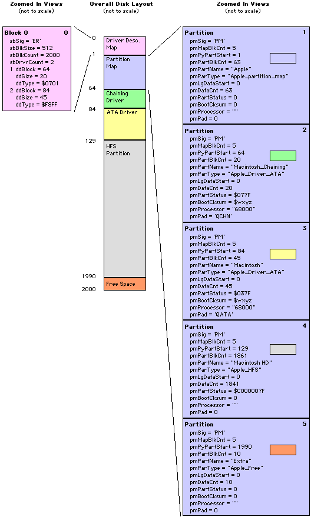

|
|
This Technote is both a summary and review of existing disk driver
information and a description of disk driver features that
until now have not been generally documented.
This Note is directed at developers of disk drivers and
disk formatting utilities. There is also a section
specifically aimed at application developers who need to
operate on disks directly.
Updated: [Nov 22 1999]
|
Introduction
The Mac OS disk driver architecture has not been
comprehensively documented since Inside Macintosh
II (1985). In the intervening years, disk technology
has changed radically, from 400 KB floppy disks to FireWire,
visiting two different SCSI Managers and four versions of
ATA Manager on the way. Many of these technological changes
have been accompanied by architectural changes for which the
documentation is in obscure
places, was not
generally released, or was just never written.
The technote is an attempt to rectify that oversight. It
serves both to bring together the existing documentation and
to fill in the missing pieces. You can use this technote as
either a reference, an introduction to writing disk
drivers, or just to bring yourself up-to-date on the latest
disk driver advances.
If you are new to Mac OS disk drivers, you should start
with the Disk Driver Basics
section. If you're already familiar with the basics of the
Mac OS disk driver architecture, you may want to start with
the two high-level summaries, one for
disk driver
writers and one for
application developers.
Existing Information
The existing documentation for disk drivers is scattered
through many different Apple documents, interface files, and
code samples. The section
classifies these references based on their
usefulness.
Core References
These large works cover information that you will
definitely need in your driver. Don't start a disk driver
without being familiar with these works:
- Inside Macintosh:
Devices, SCSI
Manager is the core
reference for the classic SCSI Manager programming
interface, introduced with the Mac Plus. It also
describes the Apple partition
map format, used by all
Macintosh computers since the Mac Plus.
- Inside Macintosh:
Devices, SCSI
Manager 4.3 is the core
reference for the SCSI Manager 4.3 programming interface,
introduced with the Quadra 840av. All SCSI drivers
written today should use the SCSI Manager 4.3 programming
interface.
- ATA
Device Software for Macintosh Computers (previously
known as the ATA Device Software Guide) is
the core reference for the ATA Manager, which allows you
to find and control ATA devices connected to the
computer. The "ATA Driver Reference" chapter offers a
useful summary of the Control and Status requests
relevant to a modern Mac OS hard disk driver, although
some of the information is inaccurate and has been
updated in this
document.
- ATA
0/1 Software Developers Guide is a supplement to the
above, and describes the changes required to support
device 0/1 (master/slave) on ATA buses.
- Inside
Macintosh: Files describes the
drive
queue, a key data structure used by all disk drivers.
- Technote 1041,
"Inside
Macintosh: Files Errata" comprises corrections to the
core Inside Macintosh: Files document.
- The Shared Device
Access Protocol specification.
- DTS sample code
RAM
Disk implements the basic framework for a disk
driver. Unfortunately, it does not demonstrate how to
handle requests asynchronously, which is one of the
trickiest things to get right in a disk driver.
- DTS sample code
TradDriverLoaderLib
shows how to correctly install a Mac OS driver
'DRVR'.
- DTS sample code
SCSI
Driver Example demonstrates a fully fledged SCSI
driver that supports both classic SCSI Manager and SCSI
Manager 4.3. It is a useful sample, although it has
decayed a bit in the years since it was last updated
(1994).
- DTS sample code
ATA_Demo demonstrates
how to read blocks from both ATA
and ATAPI disks.
- "DriverGestalt.h" (from the latest
Universal
Interfaces) always contains the most up-to-date list
of Driver Gestalt selectors.
- The MoreDisks module from the DTS sample code library
MoreIsBetter
contains a comprehensive list of all the currently
defined disk driver Control and Status requests, and
where to get more information on how to support them.
Additional Information
These smaller documents contain information that
supplements the above in certain key areas.
- Technote 1098,
"ATA
Device Software Guide: Additions and Corrections" is
the latest errata for the
ATA
Device Software for Macintosh Computers.
- Technote DV 17
Sony
Driver: What your Sony Drives For You documents the
Control and Status requests supported by Apple's standard
floppy disk driver. This is a key reference for disk
driver developers. Floppy disk driver writers should also
read the "MFM Disk Device Driver" chapter of
Apple
Logic Board Design LPX-40 Developer Note (hardware
developer note), which includes information on floppy
disk Control and Status requests that is missing from DV
17.
- Technote DV 22,
"CD-ROM
Driver Calls" documents the Control and Status
requests supported by Apple's standard CD-ROM driver.
This is a key reference for CD-ROM driver developers.
- Technote 1104,
"Interrupt-Safe
Routines" answers the perennial question, can I do X
at interrupt time?
- Technote 1067,
"Traditional
Device Drivers: Sync or Swim" addresses a common
misconception of device driver writers.
- Technote 1040,
"Write
Cache Flushing: Techniques for Properly Handling System
Shutdown" describes how disk drivers should handle
system shutdown.
- Technote ME 09,
"Coping
with VM and Memory Mappings" is probably the best
place for information on ensuring that your device driver is
compatible with virtual memory.
- Technote 1094,
"Virtual
Memory Application Compatibility" contains a description of the Mac
OS VM architecture as a whole, which is useful background
material for device driver writers.
- Designing
PCI Cards and Drivers for Power Macintosh Computers,
pages 110 through 117, documents the Driver Gestalt
mechanism and some new Control requests. This technote
provides clarifications and corrections on
Driver Gestalt and the
mechanism used to boot
from a partition. In addition, the
File Exchange section of this
technote completely replaces the PC Exchange description
in the book.
- Guide
to the File System Manager contains useful background
information about how FSM interacts with disk drivers;
however, the specific recommendations for driver writers
are covered in the File
Exchange section of this technote.
- DTS Q&A OPS 22,
"Notification
Manager Reinitialized During Boot" is an important
tidbit for disk driver developers.
- DTS Q&A DV 34,
"Secondary
Interrupts on the Page Fault Path" describes the
dangers of using secondary interrupts in software that
must service page faults. While the Q&A was written
for SIM developers, its warning is also important for
other page fault path software, such as disk drivers.
Disk drivers must not use secondary interrupts (or,
for that matter, deferred tasks) on the page fault
path.
- Data Structure to
Aid Security and Recovery Software, David Shayer and
Marvin Carlberg, 1991
- The InterruptSafeDebug module
of the DTS sample code library MoreIsBetter can be useful when tracking down nasty
crashing problems in a device driver, especially those
that happen early at startup time.
Obsolete
These documents, as they pertain to disk drivers, are
considered obsolete. This list is provided for completeness only. You
should read the recommended material instead.
- Inside Macintosh
II, "The Disk
Driver", page 211 through 219, documents the basic
interface to a disk driver, include the
kEject (7) Control request, the
kSetTagBuffer (8) Control request, and the
kDriveStatus (8) Status request.
- Inside Macintosh
IV, "The Disk
Driver", page 223 through 224, documents the
kVerify (5), kFormat (6), kTrackCache (9), and kDriveIcon (21) Control requests.
- Inside Macintosh IV, "The SCSI Manager",
page 292 through 293 describes the original partitioning
format used on the Mac Plus and goes on to say, "Since the
driver is called to install itself, it must contain code
to set up its own entry in the unit table and to call its
own Open routine. An example of how to do this can be
obtained from Developer Technical Support." This example
was part of the "SCSI Driver Developer Kit". All of the
information in the kit is available elsewhere. The
specific sample code referenced by the book evolved into
SCSI
Driver Example.
- Inside Macintosh
V, "The Disk Driver",
page 470 through 471, documents the
kDriveIcon (21), kMediaIcon (22), and kDriveInfo (23) Control requests.
- Technote DV 2,
"_AddDrive,
_DrvrInstall, and _DrvrRemove" documented the
AddDrive, DriverInstall, and
DriverRemove system routines. This technote
is now obsolete. AddDrive is documented in
Inside
Macintosh: Files, and DriverInstall, and
DriverRemove are covered by
Inside
Macintosh: Devices, along with
DriverInstallReserveMem. Moreover,
developers of 68K drivers should use
TradDriverLoaderLib to
install their drivers.
- Technote DV 12,
"Our
Checksum Bounced" documents a misfeature of the code
used by the ROM to checksum disk drivers. The technote is
now obsolete. The ROM checksum behavior is described in
Inside
Macintosh: Devices and this technote describes the
checksum algorithm itself.
- Technote DV 13,
"_PBClose
the Barn Door" still contains valid advice for general
device driver writers, although this technote deals with
this topic as it applies to disk
drivers.
- Technote DV 18,
"CD-ROM
Notes (Most Excellent)" contains some interesting
historical information about CD-ROM devices, although
much of the information is now obsolete or covered
elsewhere.
- Power
Macintosh 9500 Computers (hardware developer note)
describes many aspects of the large volume support
(greater than 4 GB support) introduced with that machine.
The large volume support aspects of that developer note
are now obsolete. This technote discusses
large volume support as
it applies to disk drivers. DTS Q&As FL
07
and FL
08
discuss large volume support from the application
perspective.
- The following documents were never released
generally. Their developer-oriented content has been
rolled into this technote.
- "Chainable Drivers and Patches"
- "Ruby Slipper Lite ERS" (large volume support)
- "Bootable CD Developer Kit (Software Developer
Note)"
- "PC Exchange and Large Volume Drivers"
Checklist
for Disk Driver Writers
All of the above is probably overwhelming, so here is a
summary of the most important steps to take to improve the
reliability and compatibility of your disk driver:
- If you do nothing else, you should support
Driver Gestalt.
- You should support the partition map entry features
documented in Secrets
of the Partition Map. Specifically, you should ensure
that your driver is checksummed, supports booting from a
partition, and write your driver signature to the
pmPad field.
- Your driver should support
large volumes,
including booting from large volumes on machines without
large volume support in the ROM by means of the
'ruby' patch.
- You should follow the rules when
installing
and removing your driver and its drive queue
elements. You should also support
close to allow other
developers to remove your driver cleanly.
- If your driver uses
SCSI Manager 4.3 or ATA Manager, it must register itself
with the manager. The documentation for each manager
describes how this is done. If you're using SCSI Manager
4.3, use
SCSICreateRefNumXref.
If you're using ATA Manager, use
kATAMgrDriveRegister.
- You should support the File
Exchange interface. This will allow foreign file
systems to access your disks without any skullduggery.
- You should check that your
private
Control and Status requests follow the rules, both
with respect to Driver Gestalt and virtual memory. This
is harder than you might think.
- You should support
read-verify mode. This
technote explains how to do it easily.
- You may want to support
target
mode in your ATA
driver.
- You may want to support color
icons. Woo hoo!
For Application
Writers
The purpose of a disk driver is to support a generic
interface for accessing block devices. The primary client of
this interface is the File Manager, although it can be used
by other programs. If you're writing a foreign file system,
or just an application that needs something beyond the
standard File Manager programming interface, parts of this
technote may be of interest to you.
- If you need to interrogate a driver about its
capabilities, you should read the section
Driver Gestalt
for Applications.
- If you need to read arbitrary blocks on a volume, you
should read the discussion of the
XIOParam block for
applications, along with the accompanying
hints and
tips.
- If you need to read arbitrary blocks outside of a
volume -- for example, the partition map, or a non-Mac OS
partition -- you should investigate the
File Exchange section of this
technote, especially the section on using the
File Exchange
interface.
- If you need to verify that you have written data to
the disk correctly, you should check out the
read-verify mode section
which describes the easiest way to do this. [Hint: Think
"MoreFiles"!]
- If you need to get color icons for a drive, you can
now call the disk driver to get
them -- although you should probably just call
Icon
Services instead.
In addition, if you're writing a disk formatting utility,
this technote contain invaluable information on the
partition map,
chaining
drivers, patch partitions, and
"hostile" takeovers.
Back to top
Disk Driver Basics
Mac OS communicates with attached devices through
device drivers, which are software plug-ins
that conform to a well-defined structure. The Device Manager
is the original system component used to install, find,
manage, and communicate with device drivers. It exports
routines that can be called by higher level system software,
and by applications. Most of these routines translate
directly into requests to the underlying device driver.
In order to identify different drivers, the Device
Manager assigns each installed driver a unique negative
number, referred to as a driver reference
number. When calling the Device Manager, clients
pass a driver reference number to tell it which driver they
are dealing with.
For a block device to be available to the system, it must
have a disk driver. This is either in the
ROM (for the built-in floppy drive), or loaded at system
startup from a special partition on the disk (SCSI, ATA, and
FireWire devices), or loaded from a system extension (USB
and FireWire devices). In addition, a disk driver can be
loaded when a device is plugged in by either an I/O family
expert (ATA, USB, and FireWire), or by a special utility
program (SCSI). Finally, software can install a disk driver
for a virtual block device which has no obvious physical
presence, such as a RAM disk or disk image. Regardless of
how they are installed, all
disk drivers roughly follow the same rules.
It is important to note the difference between a disk and
a device. A block
device is the entity which reads and writes
data on a disk. A disk is the medium which
actually stores the data. This distinction is unimportant
for fixed disk devices (such as hard disks), but is critical
for removable disk devices (such as floppy drives and
removable cartridge disk devices).
Mac OS always directs block I/O to a software entity
known as a drive. Each disk driver creates
one or more drives and puts them in a system structure called the drive
queue. Each drive queue element
represents a drive, and
contains both the driver reference number and the drive
number. The drive number is a positive
number that uniquely identifies the drive; it is assigned
when the drive is added to the drive queue.
A drive does not necessarily correspond directly to a
given physical device. Rather, the driver decides which
drives to create for the device it controls. In some cases,
there is one drive per physical device. For example, the
built-in floppy disk driver creates a drive for each
attached floppy disk device. However, it is also common for
a driver to create multiple drives for a single device. For
example, the driver for a partitioned hard disk device
creates a drive for each file system partition on the disk.
When the system performs I/O to a drive, it supplies the driver
reference number of the device driver and the drive number
of a drive created by that driver. The Device Manager uses
the driver reference number to find the device driver and
call its entry point. The device driver then uses the drive
number to determine which drive is the target of the I/O
request.
All drive I/O is done is terms of 512-byte logical
blocks. Therefore, all transfers must start at multiple of
512 bytes and be a multiple of 512 bytes long. This is
regardless of the underlying device's block size.
File Manager and Drives
To allow the flexibility of storage required by the user
interface (a hierarchy of folders and files), Mac OS implements another
layer of abstraction, known as the File Manager, on top of the Device Manager
and the drive queue.
A file
system is a mechanism for storing
fine-grained data (files) and meta-data (folders, Finders
attributes, and so on) on a drive. The file system defines
the way this data is stored and the rules for manipulating
it. The File Manager includes built-in support for two file
systems (HFS and HFS Plus) and a plug-in architecture (File
System Manager) for others (AppleShare, DOS FAT, ProDOS ,
UDF, and third-party FSM plug-ins).
The File Manager exports a programming interface defined
in terms of volumes, which
contain directories, files, and meta-data. A
volume is an instance of a file system on a
drive. Each volume is uniquely identified by a negative
volume reference number, which is stored,
along with other data to operate the volume, in a
volume control block (VCB) that is linked
into the system VCB queue. The VCB also
contains the drive number and the driver reference number of
the drive on which the volume is mounted.
The process of making the contents of a drive available
via the File Manager is called mounting a
volume. When the File Manager attempts to mount a volume on
a drive, it calls each of the file systems in turn to determine which one
understands the logical format of the data on the disk in the drive. It then
creates a VCB for that file system on that drive.
The File Manager takes requests to operate on the volume
and passes them to the appropriate plug-in file system,
which reduces them to basic block operations and passes them
to the drive via the Device Manager (using the drive number
and driver reference number stored in the VCB). As far as
the file system is concerned, the drive is its own logical
disk, even though it may only represent a small part of the real
disk.
A drive can exist without having a volume mounted on it.
This happens, for example, if the data format on the drive
is incomprehensible to the installed file systems, or the
volume on the drive has been unmounted. You can still access the data on a
drive that has no volume mounted on it, but only via the
Device Manager interface.
Terminology
In any technical document, it is very important to get
your terminology straight. This is especially important when
talking about disk drivers, where much of the terminology
has been extended over the long, confusing history of the
Mac OS block storage architecture. This technote uses the following terms
throughout.
- disk driver
A software plug-in that implements a hardware
abstraction layer for block devices, like hard disks,
floppy drives, and CD-ROM drives. In Mac OS, a disk
driver must be a Device Manager driver (either a 68K
driver or a native driver). - 68K driver
A disk driver implemented using the traditional 68K
driver architecture, as documented in
Inside
Macintosh: Devices. A 68K driver is commonly stored
in a resource of type 'DRVR' or in a driver partition. - native driver
A disk driver implemented using the native
driver model, introduced
with the first generation of PCI Power Macintosh
computers and documented in
Designing
PCI Cards and Drivers for Power Macintosh Computers.
A native driver is commonly stored in a file of type
'ndrv', although native drivers have started
appearing in driver partitions as well. - driver reference number
An SInt16 that uniquely identifies a
Device Manager driver to the system. Driver reference
numbers are not persistent -- they are assigned when the
driver is added to the unit table -- but some driver
reference numbers are assigned to certain well-known
drivers. Driver reference numbers occupy the same "name
space" as file reference numbers (which identify an open
file). Driver reference numbers are always negative,
while file reference numbers are always positive. Zero is
an invalid driver reference number and an invalid file
reference number. - unit table
A Device Manager data structure
that lists the installed device drivers (both 68K and
native). - block device
A block-oriented storage device. - real block device
A block device that has some obvious physical
presence, such as a floppy drive or a SCSI hard disk
device. - virtual block device
A block device this has no obvious physical presence,
such as a RAM disk, a disk image, or a network block
device. - device
Some hardware attached to the computer. In this
context of this technote, this typically means a block
device although, in some
places, the term may be used for any type of
device. - disk
The actual physical media which holds data. A disk is
made up of blocks, each of which holds a fixed number of
bytes (typically 512). A disk is distinct from a block
device because, in the case of removable disk devices,
the user can insert one of many different disks into the
device. - disc
A synonym for "disk" that is only used in the context
of CD or DVD discs (where the disk is actually a disc). - media
See disk. - drive
A Mac OS software construct used to represent a block
storage entity. A volume is always mounted on a drive.
There may be multiple drives corresponding to a single
disk. Exception: some removable disk devices have been
historically known as drives (for example, floppy drive,
CD-ROM drive). This technote continues to use "drive" in
these contexts, rather than the more cumbersome "floppy
disk device." However, if the word "drive" appears
unqualified, it always refers to the primary definition. - drive queue
A OS queue which contains all the drive queue
elements known to the system. You can get the head of the
drive queue using the routine GetDrvQHdr.
See
Inside
Macintosh: Files for more details of the
drive
queue and its elements. - drive queue element
The specific data structure used to represent a
drive. A drive queue element is a structure of type
DrvQEl allocated in the system heap and
placed in the drive queue. - drive number
An SInt16 which uniquely identifies a
drive. Drive numbers are not persistent; they are
assigned when the drive is added to the drive queue.
Drive numbers occupy the same "name space" as volume
reference numbers. Drive numbers are always positive,
while volume reference numbers are always negative. - partition
A disk may be divided into a set of contiguous
blocks, each known as a partition. Partitions are
typically either file system partitions (which hold file
system data) or meta-data partitions (which hold
information about the disk, such as the partition map or
the disk's device driver). Not all disks are partitioned,
although a disk must be partitioned to support booting
(except for floppy disks, because the driver for the
built-in floppy disk drive is in the ROM). - partition map
A data structure, typically at the beginning of the
disk, which describes the partitions on the disk. Most
Mac OS disks are partitioned using the Apple partition
map format, described in
Secrets of the
Partition Map. - partition map entry
The Apple partition map describes each partition on
the disk using a partition map entry data structure (of
type Partition). - startup partition
The partition which the user has designated as the
one from which they prefer to boot the system, or the
partition from which the system booted. - driver partition
A partition which contains a disk driver. - file system partition
A partition which contains file
system data. - meta-data partition
A partition which holds information about the disk,
such as the partition map or the disk's device driver. - partition-based driver
A driver that is loaded from a partition. - file system-based driver
A driver that is loaded from a file in the file
system, typically in the Extensions folder. - disk-based driver
Either a partition-based driver or a file
system-based driver. This term is ambiguous and to be
avoided. - ghost partitioning
A system used on non-512 byte block devices where
partition map entries appear at both 512-byte boundaries
and device block boundaries so that they can be seen by
software using either physical or device blocks. - I/O family
A component of the Mac OS I/O subsystem that is
responsible for a particular category of devices. A
driver can work within multiple I/O families. Each family
requires certain attributes of the driver (for example,
how it is packaged and the programming interface it
provides to upper layer software) and provides services
for the driver. For example, a FireWire disk driver must
be packaged as a native driver which responds to the
standard disk driver programming interface, and FireWire
provides services to the disk driver, such as SBP-2
utility routines. - I/O family expert
A component of an I/O family
that seeks out devices of a particular type and registers
them with the I/O family. - volume
A File Manager software construct that represents a
single, user-visible storage device. Each volume appears
as a icon on the desktop. Each
volume is mounted on a drive, so if the disk has multiple
file system partitions it will also have multiple drives
and hence multiple volumes. - volume reference number
An SInt16 which uniquely identifies a
volume. Volume reference numbers are not persistent; they
are assigned when the volume is mounted. Volume reference
numbers occupy the same 'name space' as drive numbers.
Drive numbers are always positive, while volume reference
numbers are always negative. - refNum
This contraction of "reference number" is ambiguous
and is not used in this document. In other documents, it
commonly means either a driver reference number or a file
reference number, depending on context. - vRefNum
A contraction of volume reference number. - logical blocks
The block numbering scheme used to access blocks on a
drive. Each logical block contains 512 bytes and the
first block accessible through the drive is block 0. See
Block Translation for
details. - physical blocks
The block numbering scheme used to access blocks on a
disk. You can derive a physical block number from a
logical block number by adding to
it the start block number of the partition. If the
disk is not partitioned, logical blocks and physical
blocks are identical. Each physical block contains 512
bytes. See Block
Translation for details. - device blocks
The actual block numbering scheme used by the device
hardware to access data on the disk. Device blocks are
not necessarily 512 bytes big, and the device driver is
responsible for blocking and deblocking to present the
illusion of 512-byte physical blocks to the system. See
Block Translation for
details. - blocks
When used without qualification in this technote, blocks means
logical blocks. - sectors
Depending on context, this can
either mean device blocks (for a floppy drive), physical
blocks (for a hard disk device), or logical blocks (in a
volume format specification). To avoid confusion, this
technote avoids the term "sector" in favor of its more
specific synonyms. - chaining driver
A driver loaded from a partition which performs some
action and then loads the next driver in the driver
chain. The most common chaining driver is Apple's patch
driver. - driver chain
A sequence of drivers, each in its own driver
partition, that can all be loaded for a particular
expansion bus type (for example,
SCSI or ATA). Each driver chain consists of one or
more chaining drivers and a real driver for the disk. A
disk may contain more than one driver chain if it can be accessed through more
than one expansion bus type. - patch driver
A chaining driver which applies the patches from a
patch partition and then chains to the next driver. - patch partition
A meta-data partition containing patches that must be
applied to the system before it can boot. The patches in
the patch partition are applied by the patch driver
before it chains to the real disk driver. - target mode
PowerBook computers can be placed in target mode,
where the PowerBook's internal hard disk device is
accessible as a hard disk device to other computers on
an expansion bus (typically
SCSI). - SCSI disk mode
See target mode. - request
When the Device Manager calls a driver entry point
(Open, Close, Prime, Control, or Status for a 68K driver,
DoDriverIO for native drivers), it passes
the address of a parameter block which describes the
requested operation. This is known as a request. A
request is different from a simple function call in that
the driver may return from this initial call without
completing the request. Specifically, for queued
requests, the request is not complete until the driver
explicitly tells the system so (by calling
IODone for 68K drivers, or by calling
IOCommandIsComplete for native drivers). - queued request
Synchronous and asynchronous requests are
collectively known as queued requests. This is because
they are queued in the driver's queue (on the
dCtlQHdr) and the driver is marked as busy
while the request is being processed. - immediate request
Immediate requests are distinct from queued requests
in that they are not placed
in the driver's queue and do not mark the driver as busy.
Back to top
Driver Gestalt
All disk drivers should support Driver Gestalt. Driver
Gestalt is a mechanism whereby the system can query your
driver to determine whether it supports advanced driver
features. In many ways it is similar to the Mac OS Gestalt
Manager, except that the system is querying your driver, not
the other way around.
Your driver should support Driver
Gestalt. If you don't support Driver Gestalt, the
system is in the dark as to which advanced driver features
your driver supports.
Driver Gestalt Reference
The basic reference for Driver Gestalt is
Designing
PCI Cards and Drivers for Power Macintosh Computers,
specifically the "Driver Gestalt" section starting on page
106. However, Driver Gestalt is useful even on non-PCI
computers. Your driver must support Driver Gestalt
regardless of what computer or OS version it is running on.
Designing
PCI Cards and Drivers for Power Macintosh Computers does
not document all of the selectors associated with Driver
Gestalt. The only official, up-to-date list of Driver
Gestalt selectors is the "DriverGestalt.h" header file,
provided as part of Universal Interfaces. When Apple defines
a new Driver Gestalt selector, we add the selector to
"DriverGestalt.h", along with comments that describe how to
implement it.
In the event of a conflict between the written
documentation and "DriverGestalt.h", "DriverGestalt.h" is
correct and the written documentation is wrong. For example,
Designing
PCI Cards and Drivers for Power Macintosh Computers
describes the response of the 'purg' selector
as a Boolean (page 111), whereas
"DriverGestalt.h" correctly describes the response to be of
type DriverGestaltPurgeResponse.
Driver Gestalt Guarantees
By saying that it supports Driver Gestalt, your driver
guarantees certain things to the system, including:
- Your driver will return
controlErr in
response to a Control request with an unrecognized
csCode.
- Your driver will return
statusErr in
response to a Status request with an unrecognized
csCode.
- Your driver will return
controlErr in
response to a Driver Configure request with an
unrecognized selector.
- Your driver will return
statusErr in
response to a Driver Gestalt request with an unrecognized
selector.
- Your driver will not use any
csCodes
below 128 for private Control or Status requests.
Items 3 and 4 in the list above are not documented
clearly in
Designing
PCI Cards and Drivers for Power Macintosh Computers,
although they are implemented by all Apple drivers and are
clearly shown in the various Driver Gestalt samples. This
technote serves to officially document these two additional
requirements.
Driver
Gestalt for Applications
Probably the best way to understand how to issue Driver
Gestalt queries from an application is to look at some
sample code. "Driver Gestalt Demo" is a simple sample that
shows how to issue a few queries. "DriverGestaltExplorer" is
a more comprehensive sample, which is also useful as a
simple test and investigation tool. Both samples are
available as DTS
sample
code.
Summary of Driver Gestalt
All disk drivers should support Driver
Gestalt.
Back to top
Secrets of the Partition Map
A number of features have been added to the Apple partition map since it was
documented in
Inside
Macintosh: Devices. This section describes those
features in detail.
Partition Field Relevance
The description of the
Partition
data type in
Inside
Macintosh: Devices does not explicitly call out that
some fields of the data structure are only relevant for
driver partitions (those whose partition name contains
"Apple" and "Driver"). Specifically, the fields from
pmLgBootStart through to
pmProcessor are only relevant for driver
partitions. Non-driver partitions should set these fields to
zero.
pmParType Possibilities
Inside
Macintosh: Devices documents the
well
known values for the pmParType field of the
partition map entry, namely "Apple_partition_map",
"Apple_Driver", "Apple_Driver43", "Apple_MFS", "Apple_HFS",
"Apple_Unix_SVR2", "Apple_PRODOS", "Apple_Free", and
"Apple_Scratch". This technote describes a number of
additional partition types.
- "Apple_Driver_ATA" -- Holds the device driver for an
ATA device.
- "Apple_Driver_ATAPI" -- Holds the device driver for
an ATAPI device. When it discovers a device on an ATA bus, the ATA
Manager identifies whether a device is ATA or ATAPI and
automatically loads the corresponding driver.
- "Apple_Driver43_CD" -- A SCSI CD-ROM driver suitable
for booting.
- "Apple_FWDriver" -- Holds a FireWire driver for the
device. See Loading
FireWire Drivers for details.
- "Apple_Void" -- A dummy partition map entry, used to
pad out a partition map to ensure the correct alignment
of partition map entries in a
bootable CD-ROM.
- "Apple_Patches" -- Holds a patch partition. The patch
partition architecture is described in
Chaining
Drivers and Patch Partitions.
|
IMPORTANT:
Apple reserves all partition types beginning
with "Apple". Apple expects to add a number of new
partition types in the near future, and your
software should handle these new, reserved partition
types cleanly.
|
pmPartStatus Revealed
Inside
Macintosh: Devices says that the
pmPartStatus field of the
Partition data structure is only used by A/UX,
bits 0 through 7 having a defined meaning and all others
being reserved. This is no longer true.
The following flags are defined in
pmPartStatus field of the
Partition structure. All
bits not defined here are reserved (you should initialize
them to 0 and ignore their value).
enum {
kPartitionAUXIsValid= 0x00000001,
kPartitionAUXIsAllocated = 0x00000002,
kPartitionAUXIsInUse= 0x00000004,
kPartitionAUXIsBootValid = 0x00000008,
kPartitionAUXIsReadable = 0x00000010,
kPartitionAUXIsWriteable = 0x00000020,
kPartitionAUXIsBootCodePositionIndependent = 0x00000040,
kPartitionIsWriteable = 0x00000020,
kPartitionIsMountedAtStartup = 0x40000000,
kPartitionIsStartup = 0x80000000,
kPartitionIsChainCompatible = 0x00000100,
kPartitionIsRealDeviceDriver = 0x00000200,
kPartitionCanChainToNext = 0x00000400,
};
|
Bits 0 through 4 and 6 are still defined as documented in
Inside
Macintosh: Devices. A Mac OS formatting utility should
always set these bit to 1 for file system partitions and
clear them for other partition types.
The second group of bits is used by Apple Mac OS disk
drivers to hold information about file system partitions.
kPartitionIsWriteableThis bit indicates whether the partition is writeable
(1) or write-protected (0). If the bit is clear and your
driver creates a drive queue element to represent this
partition, it should mark the drive queue element as
write-protected. Note that mask has the same value (and
the same semantics) as
kPartitionAUXIsWriteable. kPartitionIsMountedAtStartupThis bit indicates whether the partition is mounted
at system startup (1) or not (0). If your driver would
otherwise create a drive queue element to represent this
partition at system startup and this bit is clear, it
should not create the drive. kPartitionIsStartupThis bit indicates whether this is the startup
partition (1) or not (0). This bit must be set for at
most one partition. See
A Partition of Your
Imagination below.
|
Note:
Some third-party disk drivers reverse the sense
of the kPartitionIsMountedAtStartup
bit of pmPartStatus. This is a bug.
Unfortunately, we cannot retroactively fix that bug
on all installed disks, so it is not possible to
look at this flag and determine whether the
partition will be mounted. The most reliable way to
work out whether a partition will be mounted at
startup is by using the
partition
attribute Control and Status requests.
|
The third group of bits provides information about driver
partitions. You may need to read
Chaining
Drivers and Patch Partitions to understand these
descriptions.
kPartitionIsChainCompatibleThe driver in this partition supports being loaded by
a chaining driver. kPartitionIsRealDeviceDriverThis partition contains a driver that actually knows
how to drive the device. Contrast this with the patch
driver, which is chain compatible, but which can only load
patches and then chain to the next driver; it does not
actually contain a disk driver. kPartitionCanChainToNextThis partition contains a driver that can chain to
another driver. Typically, all drivers in the chain must
have this bit set, except the last one where it is clear.
|
IMPORTANT:
Some Apple and most third-party drivers do not
have the chaining flags set correctly, so it is
virtually impossible for your software to rely on
their semantics.
|
Partition Attributes
There are a number of Control and Status requests that
modify the attributes of a partition. A disk driver must
support these requests as described below. A formatting
application can use these requests to modify partition
attributes.
Setting the Startup
Partition
|
Trap |
_Control
|
|
Mode |
Synch, Async |
|
csCode
|
SInt16
|
-> |
kSetStartupPartition (44)
|
|
ioVRefNum
|
SInt16
|
-> |
The drive number of the new startup partition,
or 0 if you wish to specify the startup partition
by block number. |
|
csParam[0..1]
|
UInt32
|
-> |
If ioVRefNum is 0, this is the
physical block number of the partition map entry of
the new startup partition. If
ioVRefNum is not 0, this is ignored. |
|
csParam[2..3]
|
|
-> |
If ioVRefNum is 0, this is the
device containing the new startup partition. This
is in the same format as the SCSIID
field of the
partInfoRec.
If ioVRefNum is not 0, this is
ignored. |
In response to this request, your disk driver must set
the partition described by ioVRefNum and
csParam[0..3] as the startup partition.
Typically this involves setting
kPartitionIsStartup in
pmPartStatus,
which in turn causes your disk driver to place the drive
queue element for this partition first in the drive queue at
system startup.
|
IMPORTANT:
When your driver sets the
kPartitionIsStartup bit for one
partition, it must clear it for all other
partitions. This bit must be set for at most one
partition.
|
Determining Whether a Partition is the Startup Partition
|
Trap
|
_Status
|
|
Mode
|
Synch, Async
|
|
csCode
|
SInt16
|
->
|
kGetStartupStatus (44)
|
|
ioVRefNum
|
SInt16
|
->
|
The drive number of the partition to query, or 0
if you wish to query the partition by block number.
|
|
csParam[0..1]
|
UInt32
|
->
|
If ioVRefNum is 0, this is the
physical block number of the partition map entry of
the partition to query. If ioVRefNum
is not 0, this is ignored.
|
|
csParam[2..3]
|
DeviceIdent
|
->
|
If ioVRefNum is 0, this is
identifies the device containing the partition to
query. This is in the same format as the
SCSIID field of the
partInfoRec.
If ioVRefNum is not 0, this is
ignored.
|
|
csParam[0]
|
UInt16
|
<-
|
Your disk driver must set this to either 0 (this
is not the startup partition) or 1 (this is the
startup partition).
|
In response to this request, your disk driver must set
csParam[0] to
indicate whether the partition described by
ioVRefNum and csParam[0..3] is the
startup partition. Typically this involves testing
kPartitionIsStartup in
pmPartStatus.
The request returns the status that is currently recorded
in the partition map, not whether the system actually
started from this partition.
Specifying That a Partition Should Be Mounted at Startup
|
Trap
|
_Control
|
|
Mode
|
Synch, Async
|
|
csCode
|
SInt16
|
->
|
kSetStartupMount (45)
|
|
ioVRefNum
|
SInt16
|
->
|
The drive number of the partition, or 0 if you
wish to specify the partition by block number.
|
|
csParam[0..1]
|
UInt32
|
->
|
If ioVRefNum is 0, this is the
physical block number of the partition map entry of
the partition. If ioVRefNum is not 0,
this is ignored.
|
|
csParam[2..3]
|
DeviceIdent
|
->
|
If ioVRefNum is 0, this is the
device containing the partition. This is in the
same format as the SCSIID field of the
partInfoRec.
If ioVRefNum is not 0, this is
ignored.
|
In response to this request, your disk driver must set
the partition described by ioVRefNum and
csParam[0..3] to be mounted at startup.
Typically this involves setting
kPartitionIsMountedAtStartup in
pmPartStatus,
which in turn causes your disk driver to place a drive queue
element for this partition in the drive queue at system
startup.
This request modifies the partition map, and hence only
takes effect the next time the system is started. It does
not affect the state of any volume currently mounted on the
partition.
Specifying That a
Partition Should Not Be Mounted at Startup
|
Trap
|
_Control
|
|
Mode
|
Synch, Async
|
|
csCode
|
SInt16
|
->
|
kClearPartitionMount (48)
|
|
ioVRefNum
|
SInt16
|
->
|
The drive number of the partition, or 0 if you
wish to specify the partition by block number.
|
|
csParam[0..1]
|
UInt32
|
->
|
If ioVRefNum is 0, this is the
physical block number of the partition map entry of
the partition. If ioVRefNum is not 0,
this is ignored.
|
|
csParam[2..3]
|
DeviceIdent
|
->
|
If ioVRefNum is 0, this is the
device containing the partition. This is in the
same format as the SCSIID field of the
partInfoRec.
If ioVRefNum is not 0, this is
ignored.
|
In response to this request, your disk driver must set
the partition described by ioVRefNum and
csParam[0..3] to not be mounted at startup.
Typically this involves clearing
kPartitionIsMountedAtStartup in
pmPartStatus,
which in turn causes your disk driver to not place a drive
queue element for this partition in the drive queue at
system startup.
This request modifies the partition map and hence only
takes effect the next time the system is started. It does
not affect the state of any volume currently mounted on the
partition.
Determining Whether a Partition is to be Mounted
|
Trap
|
_Status
|
|
Mode
|
Synch, Async
|
|
csCode
|
SInt16
|
->
|
kGetMountStatus (45)
|
|
ioVRefNum
|
SInt16
|
->
|
The drive number of the partition to query, or 0
if you wish to query the partition by block number.
|
|
csParam[0..1]
|
UInt32
|
->
|
If ioVRefNum is 0, this is the
physical block number of the partition map entry of
the partition to query. If ioVRefNum
is not 0, this is ignored.
|
|
csParam[2..3]
|
DeviceIdent
|
->
|
If ioVRefNum is 0, this is
identifies the device containing the partition to
query. This is in the same format as the
SCSIID field of the
partInfoRec.
If ioVRefNum is not 0, this is
ignored.
|
|
csParam[0]
|
UInt16
|
<-
|
Your disk driver must set this to either 0 (this
partition is not to be mounted) or 1 (this
partition is to be mounted).
|
In response to this request, your disk driver must set
csParam[0] to
indicate whether the partition described by
ioVRefNum and csParam[0..3] is to
be mounted at system startup. Typically this involves
testing kPartitionIsMountedAtStartup in
pmPartStatus.
The request returns the status that is currently recorded
in the partition map, not whether the partition was actually
mounted at startup.
Mounting a Partition Immediately
|
Trap
|
_Control
|
|
Mode
|
Synch, Async
|
|
csCode
|
SInt16
|
->
|
kMountVolume (60)
|
|
ioVRefNum
|
SInt16
|
->
|
The drive number of the partition, or 0 if you
wish to specify the partition by block number.
|
|
csParam[0..1]
|
UInt32
|
->
|
If ioVRefNum is 0, this is the
physical block number of the partition map entry of the
partition. If ioVRefNum is not
0, this is ignored.
|
|
csParam[2..3]
|
DeviceIdent
|
->
|
If ioVRefNum is 0, this is the
device containing the partition. This is in the
same format as the SCSIID field of the
partInfoRec.
If ioVRefNum is not 0, this is
ignored.
|
In response to this request, your disk driver must create
a drive queue element for the partition described by
ioVRefNum and csParam[0..3] (if it
doesn't already have one) and post a "disk inserted" event for
it. It must do this regardless of the state of the
kPartitionIsMountedAtStartup bit in the
partition's
pmPartStatus;
however, the kPartitionIsWriteable bit still
controls whether the drive is writeable.
If there is already a volume mounted on the partition,
the system will ignore the "extra disk inserted" event this
request generates.
Locking a Partition
|
Trap
|
_Control
|
|
Mode
|
Synch, Async
|
|
csCode
|
SInt16
|
->
|
kLockPartition (46)
|
|
ioVRefNum
|
SInt16
|
->
|
The drive number of the partition, or 0 if you
wish to specify the partition by block number.
|
|
csParam[0..1]
|
UInt32
|
->
|
If ioVRefNum is 0, this is the
physical block number of the partition map entry of
the partition. If ioVRefNum is not 0,
this is ignored.
|
|
csParam[2..3]
|
DeviceIdent
|
->
|
If ioVRefNum is 0, this is the
device containing the partition. This is in the
same format as the SCSIID field of the
partInfoRec.
If ioVRefNum is not 0, this is
ignored.
|
In response to this request, your disk driver must lock
the partition described by ioVRefNum and
csParam[0..3]. Typically this involves:
- clearing
kPartitionIsWriteable in
pmPartStatus,
which in turn causes your disk driver to create a
read-only drive queue element for this partition at
system startup, and
- making the drive queue element associated with this
partition read-only. A read-only drive queue element has
bit 7 of the
writeProt field of the drive
queue element set, as described in
Inside
Macintosh: Files,
page
2-85.
Unlocking a Partition
|
Trap
|
_Control
|
|
Mode
|
Synch, Async
|
|
csCode
|
SInt16
|
->
|
kUnlockPartition (49)
|
|
ioVRefNum
|
SInt16
|
->
|
The drive number of the partition, or 0 if you
wish to specify the partition by block number.
|
|
csParam[0..1]
|
UInt32
|
->
|
If ioVRefNum is 0, this is the
physical block number of the partition map entry of
the partition. If ioVRefNum is not 0,
this is ignored.
|
|
csParam[2..3]
|
DeviceIdent
|
->
|
If ioVRefNum is 0, this is the
device containing the partition. This is in the
same format as the SCSIID field of the
partInfoRec.
If ioVRefNum is not 0, this is
ignored.
|
In response to this request, your disk driver must unlock
the partition described by ioVRefNum and
csParam[0..3]. Typically this involves:
- setting
kPartitionIsWriteable in
pmPartStatus,
which in turn causes your disk driver to create a
read/write drive queue element for this partition at
system startup, and
- making the drive queue element associated with this
partition read/write.
Determining Whether a Partition is Locked
|
Trap
|
_Status
|
|
Mode
|
Synch, Async
|
|
csCode
|
SInt16
|
->
|
kGetLockStatus (46)
|
|
ioVRefNum
|
SInt16
|
->
|
The drive number of the partition to query, or 0
if you wish to query the partition by block number.
|
|
csParam[0..1]
|
UInt32
|
->
|
If ioVRefNum is 0, this is the
physical block number of the partition map entry of
the partition to query. If ioVRefNum
is not 0, this is ignored.
|
|
csParam[2..3]
|
DeviceIdent
|
->
|
If ioVRefNum is 0, this is
identifies the device containing the partition to
query. This is in the same format as the
SCSIID field of the
partInfoRec.
If ioVRefNum is not 0, this is
ignored.
|
|
csParam[0]
|
UInt16
|
<-
|
Your disk driver must set this to either 0 (this
partition is not locked) or 1 (this partition is
locked).
|
In response to this request, your disk driver must set
csParam[0] to
indicate whether the partition described by
ioVRefNum and csParam[0..3] is
locked. Typically this involves testing
kPartitionIsWriteable in
pmPartStatus.
|
IMPORTANT:
The polarity of this test is opposite to the
other partition attribute Status requests. If the
partition is locked,
kPartitionIsWriteable is clear in
pmPartStatus.
|
The request returns the status that is currently recorded
in the partition map, not whether the partition was actually
locked at startup. You can determine whether a drive is
currently write-protected by looking at bit 7 of the
writeProt field of the drive queue element, as
described in
Inside
Macintosh: Files,
page
2-85.
pmPad Pearls
A previously undocumented feature of the
Partition structure is the use of the
pmPad field. The first four bytes of this field
is a driver signature, a Mac OS four-
character code that uniquely identifies the driver.
Developers must fill out this field with either a
registered
creator code (which is strongly recommended) or zero.
Drivers that use a registered creator code in this driver
signature field may then use the remainder of
pmPad to hold driver-specific configuration
parameters.
Apple currently uses the following driver signatures:
enum {
kPatchDriverSignature = 'ptDR',
kSCSIDriverSignature = 0x00010600,
kATADriverSignature = 'wiki',
kSCSICDDriverSignature = 'CDvr',
kATAPIDriverSignature = 'ATPI',
kDriveSetupHFSSignature = 'DSU1'
};
|
The values have the following meaning:
kPatchDriverSignatureThe Apple patch driver. kSCSIDriverSignatureThe Apple SCSI hard disk driver. [The significance of
this value has been lost in the mists of time.] kATADriverSignatureThe Apple ATA hard disk driver. kSCSICDDriverSignatureThe Apple SCSI CD-ROM driver. kATAPIDriverSignatureThe Apple ATAPI CD-ROM driver. kDriveSetupHFSSignatureDrive Setup sets the first four bytes of the
pmPad field of
"Apple_HFS" partitions to this value. While this is not,
in the strictest sense, a driver signature, it is
documented here for completeness.
Remember that your disk driver should use its own driver
signature; do not use these values for your own driver.
New Driver Types
Inside
Macintosh: Devices describes how a Mac OS driver is
tagged by having ddType set to 1 in the driver
descriptor map (DDM). There is a constant for this,
sbMac, defined in "SCSI.h". However, there are
other useful constants for this field.
enum {
kDriverTypeMacSCSI = 0x0001,
kDriverTypeMacATA = 0x0701,
kDriverTypeMacSCSIChained = 0xFFFF,
kDriverTypeMacATAChained = 0xF8FF
};
|
The following constants are defined for the
ddType field of the DDM:
kDriverTypeMacSCSIThis is a Mac OS SCSI driver, equivalent to
sbMac. Typically this is only used for the
first driver (the patch driver) in a SCSI driver chain. kDriverTypeMacATAThis is a Mac OS ATA driver. Typically this is only
used for the first driver (the patch driver) in an ATA
driver chain. kDriverTypeMacSCSIChainedThis is a chained Mac OS SCSI driver. This is used
for the second and subsequent drivers in a driver chain. kDriverTypeMacATAChainedThis is a chained Mac OS
ATA driver. This is used for the second and subsequent
drivers in a driver chain.
The driver type for a chained driver is always the two's
complement of the driver type for the patch driver. For more
information about this relationship, see
Chaining
Drivers and Patch Partitions.
Driver Checksums
Inside Macintosh, Volume V (page 580)
contains an assembly language description of the checksum
algorithm used for the pmBootCksum field of the
partition map, but this algorithm was somehow dropped from
Inside
Macintosh: Devices. As it is now quite difficult to
obtain copies of Inside Macintosh,
Volume V, the algorithm is included below.
; Inputs:
; a0.l -> pointer to driver code
; d1.w -> length of driver code in bytes
; Outputs:
; d0.w -> driver checksum
DoCksum
moveq.l #0,d0 ; initialize sum register
moveq.l #0,d7 ; zero extended byte
bra.s CkDecr; handle 0 bytes
CkLoop
move.b(a0)+,d7 ; get a byte
add.w d7,d0 ; add to checksum
rol.w #1,d0 ; and rotate
CkDecr
dbra d1,CkLoop ; next byte
tst.w d0 ; convert a checksum of 0
bne.s @1 ; into $FFFF
subq.w#1,d0 ;
@1
|
The following is a C equivalent.
static UInt32 ChecksumDriver(void *start, UInt16 bytesToSum)
{
UInt8 *cursor;
UInt16 result;
cursor = (UInt8 *) start;
result = 0;
while ( bytesToSum != 0 ) {
result = result + *cursor;
result = ((result << 1) & 0x0FFFE) |
((result >> 15) & 0x00001);
cursor += 1;
bytesToSum -= 1;
}
if (result == 0) {
result = 0x0FFFF;
}
return result;
}
|
One minor mystery of the pmBootCksum field
is that the field is 32 bits wide but the checksum algorithm
only calculates a 16-bit value. The checksum is always
stored in the least significant 16 bits of
pmBootCksum and the most significant bits are
always set to zero.
Inside Macintosh, Volume V also states that
driver checksumming is only done for if the first four bytes
of the driver's partition map entry pmPartName
field is "Maci". This is only true for SCSI disk drivers.
Other, partition-based disk drivers are always checksummed.
The above algorithm is known as the 16-bit driver
checksum algorithm. This is because the ROM
decrements and tests bytesToSum using a
DBRA instruction (which effectively makes
bytesToSum a UInt16), so only the
first bytesToSum modulo 64 K bytes of the
driver are checksummed. This is not a problem if your driver
is smaller than 64 K bytes. If your driver is larger, you
must be careful for two reasons.
- The code you use to calculate
pmBootCksum must mimic the incorrect
behavior and only checksum your driver up to the driver
size modulo 64 K.
- You may want to include your own checksum in the
driver to ensure that the driver code is intact.
|
Note:
The 16-bit driver checksum algorithm is
identical to the algorithm used by AppleTalk's
Datagram Delivery Protocol (DDP).
In some situations where the ROM loads a driver, it does
not use the 16-bit checksum algorithm. Specifically, later
versions of ATA Manager use a 32-bit driver checksum
algorithm, shown below.
|
static UInt16 ATALoadDoCksum(void *start, UInt32 bytesToSum)
{
UInt8 *startAsBytes;
UInt32 result;
UInt32 i;
startAsBytes = (UInt8 *) start;
result = 0;
for (i = 0; i < bytesToSum; i++) {
result += startAsBytes[i];
result <<= 1;
result |= (result & 0x00010000) ? 1 : 0;
}
return (UInt16) result;
}
|
The key difference is that bytesToSum is now
expressed as a 32-bit quantity, and the algorithm correctly
checksums bytes beyond 64 KB. Further, the 16-bit algorithm
never returns a checksum of 0 (it is mapped to $FFFF), while
the 32-bit algorithm can return a checksum of 0.
Your formatting utility must set pmBootCksum
appropriately, depending on which version of ATA Manager is
loading your driver. Furthermore, the ATA driver loader
mechanism is updated during the system startup process so that
on machines with the old checksum algorithm in ROM, your
driver will need a different checksum depending on whether
it is loaded at start time or after system startup.
Overall, the best solution to this
driver checksum conundrum is:
- make your driver's size less
than 64 KB (if necessary, use a boot strap driver to load
your main driver), and
- if your driver checksums to 0,
add pad bytes until it doesn't.
|
IMPORTANT:
ATA disk drivers are also limited to a size of
255 * block size bytes (just
under 128 KB for 512-byte block devices).
This is because the ROM reads the entire driver
using a single ATA request.
|
A Partition of Your
Imagination
The original Mac Plus SCSI implementation did not allow the user
to specify a startup partition. Obviously this is desired
feature, and disk driver developers came up with a number of
solutions for this problem. Over the years, Apple has
introduced various stages of OS support for booting from a
partition.
Developer-Only Solutions
Prior to Apple providing a solution, developers were
responsible for engineering their own. Developers quickly
noticed that, all things being equal, the Macintosh tends to
boot from the first bootable drive in the drive queue. Therefore,
disk driver writers arranged to add the startup partition's
drive queue element to the drive queue before the non-boot
partitions' element. The disk driver's formatting utility provided
the user interface for specifying the boot partition.
This technique was relatively effective and stimulated
user demand for a reliable mechanism for booting from a
partition.
Partition Attribute Support
Eventually, Apple codified this approach and provided
support for it in the Startup Disk control panel. The
codification came in the form of the
kPartitionIsStartup bit in the
pmPartStatus field of the partition map, along
with a driver Control request,
kSetStartupPartition,
which allows the Startup Disk control panel to instruct the
driver to set that bit.
This standardized the previous non-standard behavior,
although it still is not a perfect solution because of
variances in the way the ROM startup code chooses a drive
from which to start up.
SCSI Manager 4.3
Apple made further refinements to this solution with the
introduction of SCSI Manager 4.3. SCSI Manager 4.3 presented
new problems to the startup code because it allows for
multiple SCSI buses, and it provides full support for SCSI
LUNs. So, when SCSI Manager 4.3
was introduced, Apple also
introduced a new technique for finding the startup
partition, the kdgBoot Driver Gestalt selector.
|
IMPORTANT:
SCSI Manager 4.3 must be in ROM for the
kdgBoot selector to be effective. On
machines, such as the Quadra 700, that can run SCSI
Manager 4.3 but do not have it in ROM, SCSI Manager
4.3 loads out of the System file, too late for it
to affect the startup drive selection.
|
When the user chooses a drive in the Startup Disk control
panel, Startup Disk sends the kdgBoot Driver
Gestalt selector to the disk driver controlling that drive. Startup Disk then records the
response in PRAM. When the Macintosh boots, it iterates
through the drive queue, sending a kdgBoot
request to each drive. When it finds a drive with a value
matching the value in PRAM, it knows that this is the
correct startup drive.
The kdgBoot Driver Gestalt selector is
documented in
Designing
PCI Cards and Drivers for Power Macintosh Computers,
page 113. This documentation is accurate for SCSI drivers.
For ATA drivers, the
DriverGestaltBootResponse response fields
should be set as follows.
extDevThe ATA bus number of the device. partitionThe partition number on the bootable partition on the
device. As described
below, the format of
this field is internal to your disk driver. SIMSlotATA devices must set this to
kDriverGestaltBootATASIMSlot ($20). [This
constant is not currently in Universal Interfaces, Radar
ID 2314693.] SIMsRSRCIf your driver supports ATA 0/1, you must put 0 or 1
in this field to indicate the number of the device on the
ATA bus. If your driver does not support ATA 0/1, you
must set this to zero. See
ATA
0/1 Software Developers Guide for more details on ATA
0/1 support.
ROM-in-RAM (NewWorld)
The
ROM-in-RAM
architecture, introduced with the iMac, presents new
challenges for the startup device selection process. On a
ROM-in-RAM machine, Open Firmware is responsible for loading
the Mac OS ROM file off the startup partition, and hence
Open Firmware must define the startup partition well before
Mac OS starts to execute. When the Mac OS ROM starts, it
continues booting from the startup partition chosen by Open
Firmware to avoid the potential user confusion of loading
the Mac OS ROM from one disk and the system software from another.
Open Firmware synthesizes the traditional Macintosh
startup process, including:
- Startup drive selection algorithm -- Open Firmware
implements the traditional
startup drive selection algorithm. It turns out that this
algorithm is very complex, although the gist of it is:
- if a "snag" key is held
down, try booting from the corresponding
device,
- try booting from the default drive (if any),
- then try booting from other drives.
- CODS -- Holding down command-option-delete-shift
(CODS) prevents the Open Firmware from booting from the
default drive.
- C for CD-ROM -- Holding down the C key forces Open
Firmware to boot from the CD-ROM device. This was
previously implemented by the
"snag" patch but is
implemented by Open Firmware in ROM-in-RAM computers.
- Flashing question mark -- If no startup device is
available, Open Firmware displays the traditional
"flashing question mark" icon (although, in deference to
the fact that ROM-in-RAM computers do not have floppy
drives, it flashes the question mark inside a folder icon
instead of a floppy disk icon).
On ROM-in-RAM computers, the selected default startup
device is held in an Open Firmware configuration variable
boot-device. This configuration variable holds
an Open Firmware path to the default startup device. The
Startup Disk control panel generates a path based on the disk
driver's response to various Driver Gestalt queries.
It is impossible for Open
Firmware to completely mimic the startup drive selection
algorithm when it comes to selecting a startup partition.
When booting from a partition, boot-device
contains the Open Firmware partition number of the
startup partition. Unfortunately, there is no reliable way
to get this from a disk driver with commonly implemented
Driver Gestalt queries.
|
Note:
You might think that the partition
field of the DriverGestaltBootResponse
would do the trick; however, this field is defined
to be opaque to the system. "Designing PCI Cards
and Drivers for Power Macintosh Computers"
explicitly states:
|
The partition field
enables the selection of a single partition on a
multiply partitioned device as the boot device. It
is not interpreted by the ROM or the Startup Disk
'cdev' [sic], so the driver can choose
a meaning and a value for this field.
It turns out that different disk drivers use
different values for the partition
field. Apple disk
drivers set this to be the block number of the
partition map entry for the partition, but some third-party drivers use
other techniques, such as recording 1 for the first
HFS partition, 2 for the second HFS partition, and
so on. The upshot of this is that Startup Disk is
unable to use this field reliably to set the
partition number in boot-device.
Prior to Mac OS 9.0, the Startup Disk control panel used
tricky heuristics to allow booting from a partition with
Apple disk drivers as a temporary measure to solving this
problem. The long-term solution; however, is for disk
drivers to support a set of new Driver Gestalt queries,
which return exactly the information Startup Disk needs to
set boot-device. The required Driver Gestalt
selectors (kdgDeviceReference,
kdgNameRegistryEntry,
kdgOpenFirmwareBootSupport, and
kdgOpenFirmwareBootingSupport) are described in
"DriverGestalt.h" in Universal Interfaces 3.3.
|
Note:
Your driver only
need support the kdgNameRegistryEntry Driver Gestalt selector if your
device has an obvious Name Registry node. For
devices with no Name Registry node (SCSI), or where
the Name Registry node can be tricky to find (ATA),
it is reasonable to just return statusErr.
|
Back to top
Non-512 Byte Block Devices
The original Mac OS disk driver architecture assumed that
all block devices would use 512-byte blocks. Supporting
block devices with a different block size is relatively
simple, although it gets more complicated if you want to
boot from such a device. Non-512 byte block device support
is most important for CD-ROM drivers, which use a 2-KB block
size.
Just the Basics
The basic rule for supporting non-512 block devices on
Mac OS is that the disk driver is responsible for blocking
and deblocking all I/O requests to a drive. This discussion
assumes that the device block size is an integer multiple of
512, although similar algorithms work for weird device block
sizes.
Block Translation
The File Manager makes an I/O request in terms of
512-byte logical block numbers on a
particular drive. The disk
driver is responsible for translating the logical block
number of the request to an actual block number on the
drive. If the disk is partitioned, the first step of this
translation is to add the offset of the partition to the
logical block number; this generates the physical
block number. If the device uses 512-byte blocks,
the physical block number is the actual block number of the
data on the disk. If the device uses non-512 byte blocks,
the disk driver must do a further translation, converting
the physical block number to a device block
number by dividing the physical block number by the
number of 512-byte blocks in each physical block.
In addition, the disk driver must block/deblock the
request. If the physical block number, or the number of
blocks to transfer, is not evenly divisible by the device
block size, the disk driver must
transfer partial blocks to and from the disk.
The following diagrams shows the entire translation
process for two partitions on a 2 KB block device. All
numbers on the diagram are in the units labeled in the left
column. For example, partition 1 is a 50 MB partition which
extends from 0 to 100 mega logical blocks (512-byte blocks),
40 to 140 mega physical blocks (also 512-byte blocks), and
10 to 35 mega device blocks (2 KB byte blocks).
Implementation Notes
A disk driver typically deblocks a request by breaking it
into three components. The leading
component consists of all the requested physical blocks up
to the first device block boundary. The leading component is
empty if the requested physical blocks start on a device
block boundary.
The main component consists of all the
requested physical blocks which are fully encompassed by
device blocks. The main component may be empty if the
transfer is short. The main component is transferred
directly from between the client buffer and the disk.
Finally, the trailing component consists
of all the requested physical blocks of the transfer which
fall after the last block of the main component. The
trailing component is empty if the physical block number
plus the number of physical blocks to transfer falls on a
device block boundary.
Because you can't transfer a sub-block size request, the
leading and trailing components must be transferred through
a temporary buffer. You should allocate this temporary
buffer when your driver is opened. As the leading and
trailing components are always less than one device block
(otherwise they would be part of the main component), the
temporary buffer need only be as big as a device block. If
your device driver is single threaded, you need only
allocate a single temporary buffer. If your driver is
multi-threaded, you must allocate as many temporary buffers
as you allow threads of execution within your driver, or
internally serialize the use of the temporary buffer.
The leading and trailing components are read by
transferring the device block to the temporary buffer and
then copying the appropriate data out of the temporary
buffer to the client buffer. The leading and trailing
components are written by first reading the current contents
of the device to the temporary buffer, then copying the new
data from the client buffer to the temporary buffer, then
writing the temporary buffer to the device.
The following illustration shows how misaligned read is
transferred to the client buffer:
Performance Considerations
The above algorithm is obviously inefficient if transfers
are misaligned, that is, if the leading and trailing
components are not empty. Misaligned writes are even more
expensive than misaligned reads because the disk driver must
do an extra I/O to pre-fill the temporary buffer with the
existing contents of device block. Worse yet, a misaligned write that has both
leading and trailing components takes five I/O operations (read leading, write leading, write main,
read leading, write leading).
There are a number of ways to avoid misaligned transfers:
- Your formatting utility should always start
partitions (especially file system
partitions) on device block boundaries.
- File system clients can issue a Driver Gestalt
kdgMediaInfo request to determine the device
block size and ensure that transfers are aligned. This is
particularly important for
write requests.
- As a rule, volume formats should use the above
technique to ensure that their allocation blocks are
correctly aligned. At a minimum, volume formats should
align allocation blocks on 2 KB boundaries to accommodate
the most common cases, namely CD-ROM, DVD-ROM/RAM, and
magneto-optical devices.
It is strongly recommended that your disk driver cache at
least one device block. Many Mac OS programs will transfer
data in sequential 512-byte chunks. By caching a single
device block, your driver can radically reduce the average
time taken to service these requests.
Booting From Non-512 Byte
Block Devices
This section is not yet finished and has been omitted in the interests of shipping
an initial version of the technote. A future revision of
this technote will cover booting from a non-512 byte block
device. If you are interested in this topic, please email
DTS and ask for a
prerelease draft of this section.
Back to top
Large Volume Support
When Mac OS originally shipped, it supported volume sizes
up to 2 GB. This limit was shared by a number of system
components, including the File Manager and disk drivers.
Large volume support was introduced in two phases.
- System 7.5 introduced support for volumes larger than
2 GB, up to a size of 4 GB. The semantics of two
programming interfaces were changed to accomplish this.
PBHGetVInfo does not return the true
size of the volumes greater than 2 GB; the volume size
and free space are always clipped to 2 GB or less.- The
dCtlPosition field of the Device
Control Entry (DCE) was redefined as an unsigned
quantity.
- System 7.5.2 introduced support for volumes larger
than 4 GB, up to a size of a 2 TB. This required two new
programming interfaces.
PBXGetVolInfo returns the volume size
and free space as a 64-bit quantity.- The I/O parameter block passed to disk drivers was
extended to include a 64-bit field,
ioWPosOffset, which supplants
dCtlPosition.
The changes to the File Manager programming interfaces
are not relevant to this technote; they are documented in
DTS Q&A FL 08,
"Determining
Volume Size." This section describes the changes to the
disk driver interface.
Large Volume Interfaces
Supporting volumes between 2 GB and 4 GB was simply a
matter of redefining the dCtlPosition field of
the DCE and the ioPosOffset field of the
IOParam structure to be unsigned longs
(UInt32).
|
IMPORTANT:
While the semantics of these fields have been
changed to unsigned, Universal Interfaces (as of
the current version, 3.3) still define the fields
as signed. Your code must type cast the fields as
appropriate. |
To support volumes larger than 4 GB, a new extended I/O
parameter block (XIOParam) structure was
defined. The original and extended I/O parameter blocks are
distinguished by the kUseWidePositioning bit of
the ioPosMode field (clear for original, set
for extended).
The C definition of the extended I/O parameter block is
given below. The key difference is the addition of the
ioWPosOffset field, a signed 64-bit quantity
which contains the offset of the request.
|
IMPORTANT:
The extended I/O parameter block must only be
used for _Read or _Write
requests to device drivers. It must not be used for
accessing files. The following description assumes
this restriction to simplify the text.
|
|
Note:
This structure was previously only documented
in the
Power
Macintosh 9500 Computers hardware developer
note. The description here is not only easier to
find, but updated and more accurate.
|
struct XIOParam {
QElemPtr qLink;
shortqType;
shortioTrap;
Ptr ioCmdAddr;
IOCompletionUPP ioCompletion;
OSErrioResult;
StringPtr ioNamePtr;
shortioVRefNum;
shortioRefNum;
SInt8ioVersNum;
SInt8ioPermssn;
Ptr ioMisc;
Ptr ioBuffer;
long ioReqCount;
long ioActCount;
shortioPosMode;
wide ioWPosOffset;
};
typedef struct XIOParam XIOParam;
typedef XIOParam *XIOParamPtr;
|
For software making extended I/O
requests, the fields are defined as follows:
qLink
qType
ioTrap
ioCmdAddrUsed internally by the Device Manager. ioCompletionFor asynchronous requests, you must either set this
field to zero or set it to a universal procedure pointer
for your completion routine. For synchronous requests,
this field is ignored. ioResultOn completion this field contains the result of the
request, which is either noErr (0) or a
negative error code. The Device Manager guarantees that
this field will be set to ioInProgress (1)
until the request is complete. ioNamePtrIgnored for _Read and
_Write requests. ioVRefNumYou must set this field to the drive number of the
drive you wish to read or write. ioRefNumYou must set this field to the driver reference
number of the device driver controlling the drive you
wish to read or write. ioVersNum
ioPermssn
ioMiscIgnored for _Read and
_Write requests. ioBufferYou must set this to point to a data buffer from
which data is written, or to which data is read. ioReqCountYou must set this field to the number of bytes you
wish to read or write. For disk driver requests, this
must be a multiple of 512 bytes. ioActCountOn completion this field contains the number of bytes
of data that were actually
transferred. ioPosModeYou must set this field to
kUseWidePositioning to indicate that this is
a wide request. All wide requests use a positioning mode
of fsFromStart. You must not specify any
other positioning mode (fsAtMark,
fsFromLEOF, or fsFromMark). You
may also specify
rdVerifyMask for
read-verify mode,
noCacheMask to request that
the data not be placed in the cache, or
pleaseCacheMask to request that data be
placed in the cache. ioWPosOffsetYou must set this field to the offset (in bytes) from
the beginning of the disk where the transfer should
begin. For disk driver requests, this must be a multiple
of 512 bytes.
For disk drivers servicing an extended I/O request, the fields are defined as
follows:
qLink
qTypeUsed internally by the Device Manager. ioTrapYour driver must test bit 0 of this field to
determine whether the request is a _Read
(bit 0 clear) or a _Write (bit 0 set). It
must also test noQueueBit (bit 9) to
determine whether the request is immediate (bit 9 set) or
not. If your driver does not support immediate requests,
it must fail the request with a paramErr.
Your driver must not test
asyncTrpBit (bit 10) to determine whether
the request is synchronous or asynchronous. Instead, it
should handle all requests as if they were made
asynchronously. See Technote 1067
Traditional
Device Drivers: Sync or Swim for details. ioCmdAddrUsed internally by the Device Manager. ioCompletionThe Device Manager IODone routine will
do the right thing with this field. Your driver should
ignore this field and handle all requests as if they were
made asynchronously. See Technote 1067
Traditional
Device Drivers: Sync or Swim for details. ioResultYour driver must not read or write this field. Your
driver sets this field implicitly when it calls
IODone. When your driver has finished a
queued request, it should call IODone to
signal that the request is complete. IODone
performs a number of actions, one of which is to set this
field to the error status you passed to the routine in
register D0. Your driver must pass a non-positive
error status to IODone. ioNamePtrYour driver must ignore this field. ioVRefNumYour driver must use this field to determine which
drive is the target of the request. If your driver does
not control a drive with this drive number, it must
complete the request with nsDrvErr. ioRefNumYour driver may look at this field to determine the
driver reference number of the request. This may be
useful if the same code is used for multiple device
drivers (see Code Sharing). ioVersNum
ioPermssn
ioMiscYour driver must ignore these fields. ioBufferYour driver must transfer data to or from the buffer
pointed to by this field. ioReqCountYour driver must attempt to transfer the number of
bytes specified in this field. Your driver may fail a
request (with paramErr) if this is not a
multiple of 512 bytes. ioActCountBefore completing the request, your driver must set
this field to the number of bytes that were actually
transferred. ioPosModeYour driver must test the
kUseWidePositioning bit to determine whether
this is a wide request, as described in the next section.
If it is a wide request, your driver must ignore the
bottom 2 bits of this field (that is,
fsFromStart, fsAtMark,
fsFromLEOF, and fsFromMark) and
use ioWPosOffset to determine the offset
into the drive for the transfer. Your driver may choose
to honor the
rdVerifyMask,
noCacheMask, and
pleaseCacheMask in the traditional way. ioWPosOffsetYour driver must transfer data from this offset (in
bytes) into the drive. Your driver may fail a request
(with paramErr) if this is not a multiple of
512 bytes. If ioWPosOffset is negative or
ioWPosOffset plus ioReqCount is
beyond the end of the drive, your driver must fail the
request with a paramErr.
Supporting Large Volumes in Your Driver
To support large volumes correctly, your driver must
implement the following:
- Your driver must return true in response to the
kdgWide Driver Gestalt selector. You may
want to use the
GetDriverGestaltBooleanResponse macro to
ensure that you set the correct response byte in the
parameter block.
- When handling all
_Read or
_Write requests, your driver must check
whether the kUseWidePositioning flag is set
in ioPosMode. If it is, you must cast the
parameter block to an XIOParam and do the
I/O at the 64-bit offset specified in
ioWPosOffset. This type of request is known
as a wide request.
- If
kUseWidePositioning is not set, your
driver must do the I/O at the offset specified by
dCtlPosition. You must cast this signed
value to an unsigned quantity (UInt32) to
correctly handle offsets from 2 GB to 4 GB. This type of
request is known as a narrow request.
There are some important caveats of which you should be
aware.
- There is no guarantee that the system will check with
Driver Gestalt before issuing a wide request. The system
expects that any driver controlling a drive larger than 4 GB will
respond to wide request correctly. Similarly, the system
expects that a driver controlling a drive whose size is
between 2 GB and 4 GB is smart enough to treat
dCtlPosition as unsigned.
- There is no guarantee that the system will always use
wide requests when talking to a drive larger than 4 GB.
In fact, the system currently decides on a
request-by-request basis whether to use a wide or a
narrow request, based on the request's offset on the
drive. However, you must not rely on this behavior; you
must handle wide requests to offsets less than 4 GB
correctly.
- The
dCtlPosition field of the DCE is a
32-bit quantity, thus it cannot accurately reflect the
position of the current I/O beyond the 4 GB boundary. You
should ignore dCtlPosition for wide requests
and use it only for narrow requests.
Notes
for Developers Calling Disk Drivers
If you're writing software that issues _Read
or _Write requests to a disk driver, you must
be careful to avoid some common pitfalls. Specifically, you
should follow the recommendations given below.
- You should always use an
ioPosMode of
fsFromStart when calling a disk driver.
Because dCtlPosition cannot accurately
reflect the position beyond 4 GB, other positioning modes
do not work as expected in all cases.
- Before issuing a wide request, you should call Driver
Gestalt to determine whether the driver supports wide
requests.
- If the driver supports wide requests, you may choose
to always use wide requests for that driver. However, for
maximum compatibility, DTS recommends that you take the same approach as the
system by deciding to use a wide or narrow request based
on the offset into the drive.
The following code snippet implements these
recommendations.
static void SetWidePosOffset(UInt32 blockOffset, XIOParamPtr pb)
// Set up ioPosMode and either ioPosOffset or ioWPosOffset for a
// device _Read or _Write.
{
pb->ioWPosOffset.lo = blockOffset << 9; // convert block number
pb->ioWPosOffset.hi = blockOffset >> 23; // to wide byte offset
if ( pb->ioWPosOffset.hi != 0 ) {
// Offset on drive is >= 4G, so use wide positioning mode
pb->ioPosMode = fsFromStart | (1 << kWidePosOffsetBit);
} else {
// Offset on drive is < 4G, so use regular positioning mode,
// and move the offset into ioPosOffset
pb->ioPosMode = fsFromStart;
((IOParam *)pb)->ioPosOffset = pb->ioWPosOffset.lo;
}
}
|
In addition, you should never call
PBReadImmed or PBWriteImmed on a
disk driver unless you know, in advance, that the disk
driver supports such requests. Many disk drivers fail to
handle Immediate requests properly. Because immediate
requests result in the disk driver possibly being reentered,
these problems are hard to detect and debug.
Back to top
How the ROM Loads SCSI and ATA Drivers
This section describes how the ROM loads SCSI and ATA
drivers from a driver partition. Understanding this process
is critical to an understanding of the
chaining driver
architecture, and useful for general disk driver
writers.
|
Note:
This discussion only applies to computers with
built-in support for SCSI or
ATA, and the drivers loaded from devices
attached to those buses. It does not apply to the
Macintosh 128 and 512, which can only boot through
the floppy drive interface and do not support
partition-based drivers. Nor does it
apply to drivers for modern I/O buses, such as USB
and FireWire.
|
When a Macintosh boots, code in the ROM scans each SCSI and ATA bus for block devices in
a bus-specific manner. Once it has found a potentially
bootable block device, the ROM attempts to load a driver
from that device. The ROM executes the following procedure
to load a driver.
- It first reads device
block 0 of the disk. This is the driver descriptor map
(DDM) and is structured as the
Block0 data
type defined in "SCSI.h". It checks that block 0 is a
valid DDM by comparing the sbSig field to
sbSIGWord ($4552 or 'ER'). If
the DDM is not valid, the ROM ignores the device.
- It then reads device
block 1 of the disk and looking for the first entry of
the partition map. A partition map entry is represented
by the
Partition data structure in "SCSI.h".
For the partition to be recognized, the
pmSig field must be
newPMSigWord ($5453 or 'PM').
The ROM uses the pmMapBlkCnt field of this
first partition to determine the size of the partition
map as a whole.
- The ROM then searches the DDM for the first driver
that is compatible with this
bootable bus. The DDM contains an array of
DDMap structures. The key field in this
structure is ddType, which identifies the
type of driver defined by the structure. If the device is
attached to a SCSI bus, the ROM looks for a
DDMap whose ddType is
kDriverTypeMacSCSI. If the device is
attached to an ATA bus, the ROM looks for a
DDMap whose ddType is
kDriverTypeMacATA.
- The ROM then searches (by
reading consecutive device blocks) the partition
map for the chosen driver's partition map entry (whose
pmParType starts with
"Apple_Driver" and whose pmPyPartStart
equals the ddBlock field of the
DDMap of the chosen driver). It stores this
partition map entry in a temporary memory block.
- The ROM then searches (by
reading consecutive device blocks) the partition
map for the first HFS partition (whose
pmParType is "Apple_HFS"). It stores this
partition map entry in a temporary memory block.
- The ROM then uses the driver's
DDMap to
read the driver into memory. It first allocates a pointer
block in the system heap to hold the driver (the size of
this block is the size of the driver in blocks
(ddSize) multiplied by the disk's block size
(sbBlkSize)) and then reads the driver off
the disk (starting from ddBlock) into that
buffer.
- Next, the ROM checksums the driver to ensure its
validity. For more information on the exact details of
the checksum, see Driver
Checksums.
- The ROM then calls the driver's entry point. The
exact calling conventions are described below. The driver
is expected to install itself in the unit table, open
itself, and create drive queue elements for each mountable partition on the disk.
(The exact definition of "mountable" is covered in
Cooperating with File
System Manager.)
If any of these steps fail, the ROM assumes that the
device is not bootable and attempts to boot from the next
available device.
|
IMPORTANT:
The fact that the ROM requires an "Apple_HFS"
partition to boot from a device is important to authors of
non-standard disk drivers, such as RAID striping
drivers. The RAID software must create a dummy
"Apple_HFS" partition on the device so that the ROM will boot far enough
to load the RAID driver.
|
|
Note:
The Macintosh Plus originally used an old style
(Inside Macintosh IV) partition
format, identified by a pmSig of
oldPMSigWord ($5453 or
'TS'). Chaining drivers are not
supported on the old partition format. However, the
new (Inside Macintosh V) partition map
format will work on the Mac Plus, so it is possible
to use chaining drivers on these venerable
machines. |
If you want to support the Macintosh Plus in
your driver, you need to be aware of the subtle
difference between it and later computers.
Specifically the buffer pointed to by A0 when the
Macintosh Plus ROM calls your driver contains the
contents of the second block on the disk (the old
style "device partition map"); on all subsequent
computers, the buffer pointed to by A0 contains the
first "Apple_HFS" partition map entry.
Each driver has two possible entry points. The
primary entry point is at the beginning of
the memory block holding the driver. The secondary
entry point is 8 bytes into the memory block
holding the driver. In general, the primary entry point is
called when an "old" driver is loaded, or a "new" driver is
loaded by an 'old' ROM, and the secondary entry point is
used when a 'new' ROM load a "new" driver. The secondary
entry point has extra parameters that make sense in the
'new' ROM environment.
The exact definition of "old" and "new" depends on the
bootable bus. For SCSI, a "new" ROM is one that contains SCSI Manager 4.3, and a
"new" driver is indicated by the bytes "43" in the two bytes
following the "Apple_Driver" in pmParType. For
ATA, an 'old' ROM is one that contains ATA Manager 1.0. All
newer versions of ATA Manager use the secondary entry point.
A 'new' ATA Manager will always call
the secondary entry point of the driver.
|
Note:
Computers with
ATA
Manager 1.0 in ROM are listed in the table
below:
|
Base Model
|
Introduced
|
and Derivatives?
|
|
Macintosh Performa 630
|
July 1994
|
yes
|
|
Macintosh PowerBook 150
|
July 1994
|
yes
|
|
Macintosh LC 580
|
Apr 1995
|
yes
|
|
Power Macintosh 5200
|
Apr 1995
|
yes
|
|
Power Macintosh 6200
|
May 1995
|
yes
|
|
Power Macintosh 5300
|
Aug 1995
|
yes
|
|
Power Macintosh 6300
|
Oct 1995
|
yes, except 6360
|
|
Both entry points use register-based calling conventions.
The register usage is shown in the table below:
|
A0
|
Partition *
|
->
|
A pointer to the first "Apple_HFS" partition map
entry in the partition map. See step 5 above. You
do not own this memory and must neither change it
nor free it. This memory is
not guaranteed to be a standard Memory
Manager pointer block. This parameter is
generally ignored by drivers.
|
|
D3
|
n/a
|
->
|
See discussion below.
|
|
D5
|
bus dependent
|
->
|
A specification of the device from which the
driver was loaded, in a format that is bootable-bus dependent. See
the table and discussion
below.
|
|
D7
|
long
|
->
|
The sbData field from the DDM. This
parameter is generally ignored by drivers.
|
|
D0
|
OSErr or SInt32
|
<-
|
See discussion below.
|
Register D3
Old Apple SCSI drivers require that register D3 be set to
a non-zero value in order to boot correctly. This bug was
fixed in September 1996 although, if you are writing a SCSI
disk -mounting utility, you may still encounter these old
drivers.
Register D5
The data in register D5 depends on both the bootable bus
and the entry point called. The following table indicates
the possible combinations.
|
Bootable Bus
|
Entry Point
|
D5 Format
|
|
SCSI
|
Primary
|
0, 0, 0, SCSI ID
|
|
SCSI
|
Secondary
|
DeviceIdent
|
|
ATA
|
Primary
|
0, 0, 0, Bus
|
|
ATA
|
Secondary
|
DeviceIdentATA
|
The format of
DeviceIdentATA is given below.
struct DeviceIdentATA {
UInt8 diReserved;
UInt8 busNum;
UInt8 devNum;
UInt8 diReserved2;
};
typedef struct DeviceIdentATA DeviceIdentATA;
typedef DeviceIdentATA * DeviceIdentATAPtr;
|
The fields have the following meaning:
diReservedReserved. When calling a disk driver, the ROM sets
this to 0; however, in the case described below, this
field contains meaningful data. busNumThe ATA bus number. devNumIf the machine has ATA 0/1 support, this is the
device number of the device on that bus. Otherwise, it
must be zero. diReserved2Reserved. Set to 0.
In some cases (such as the
entry point to a patch loaded
by the Apple patch
driver), the diReserved field is used to
distinguish between a DeviceIdent and
DeviceIdentATA. The appropriate values for this
field are given below.
enum {
kBusTypeSCSI = 0,
kBusTypeATA= 1,
kBusTypePCMCIA= 2,
kBusTypeMediaBay = 3
};
|
|
IMPORTANT:
Values other than kBusTypeSCSI
(which indicates a DeviceIdent) and
kBusTypeATA (which indicates a
DeviceIdentATA) are now deprecated. PC
Card and media bay device are now handled through
the ATA Manager, modern
versions of which handle multiple buses.
|
|
Note:
In times past, it was accepted practice to use
various high bits of register D5 to hold various
pieces of state information. Specifically the
following bits are used by various Apple and third
party drivers.
|
enum {
kSecondaryEntryPointCalled = 29, // 1 => secondary entry point called
kDontMountVolumes = 30, // 1 => don't mount any partitions
kAfterSystemStartupTime = 31 // 1 => post-system startup load
};
|
However, in the circumstances described above,
all bits in register D5 can be used to hold
information. Therefore, DTS recommends that you
discontinue the practice of storing flags in the
high bit of D5 where practical.
A good substitute for the
kAfterSystemStartupTime flag is
described in
Disk Drivers
and the System Heap.
Register D0
The significance of register D0 on return from your
driver's entry point varies depending on the manager that
loaded your driver.
- For ATA Manager, your driver should return an error
result in the low word of register D0 and, if the driver
successfully installed, its driver reference number in
the high word (or a high word of zero otherwise). If you
return an error value other than
noErr, ATA
Manager will unload your driver code from memory.
- For SCSI Manager 4.3, the contents of register D0 are
always ignored. SCSI Manager 4.3 will never unload your
driver from memory. With some clever coding, you can
unload the bulk of your driver code upon a failed
installation, if you feel that level of polish is
necessary.
- For old SCSI Manager, the situation varies depending
on the particular ROM.
- The Mac Plus will treat register D0 as an error
result and unload your driver if you return a non-zero
value.
- Subsequent computers ignore the contents of
register D0. If your driver fails to install and you
want its code to be unloaded, you can return to the
return address plus 4 bytes, which signals this to
SCSI Manager. Doing this on a computer running SCSI
Manager 4.3 will crash the system.
Back to top
Loading FireWire Drivers
This section is only available under non-disclosure
agreement. Please contact DTS
for details.
Back to top
Chaining Drivers and Patch Partitions
Booting a computer is always a tricky exercise. One of
the perennial challenges is working around problems
in the ROM that prevent the OS from booting far enough to
load patches in the normal way. On pre-ROM-in-RAM Macintosh computers,
this problem is solved by means of chaining drivers and
patch partitions. Patches loaded in this way have been used
to:
- support booting from volumes larger than 2 GB on machines that don't have
such support in the ROM (for example, NuBus-based Power
Macintoshes),
- fix bugs in the ROM SCSI Manager that would otherwise
prevent booting, and
- provide support for snag booting,
where the user can hold down the C key to force the
system to boot from the CD-ROM device.
This section explains how chaining drivers and patch
partitions are implemented, and how you can license chaining
drivers and patches suitable for inclusion in your own disk
formatting utility.
|
Note:
The chaining driver architecture is only
required for SCSI and ATA devices. All computers
capable of booting from modern I/O buses (USB and
FireWire) use the
ROM-in-RAM
architecture, where the ROM is loaded from the "Mac
OS ROM" file in the System Folder. On such
machines, ROM patches are effected by updating the
"Mac OS ROM" file. |
Background Material
This section presumes that you are familiar with the
existing documentation on disk partitions and how Mac OS
loads a driver from the disk at startup time. Specifically,
you should be familiar with:
Architecture Overview
When it boots from a block device, Mac OS loads the
driver from the device itself. This driver is held in a
driver partition (whose
pmParType starts with "Apple_Driver") and is
referenced by an entry in the driver descriptor map (DDM),
which is stored in the first device block on the disk. The ROM
searches the DDM to find the appropriate driver, loads that
driver into memory, and calls it.
The chaining driver architecture works by installing a
special driver in place of the standard disk driver. This
chaining driver performs its operation
(typically it applies a patch to the ROM) and then loads the
next suitable driver in the DDM, in exactly the same way as
the ROM would have. The next driver may be a real disk
driver, or yet another chaining driver.
The sequence of drivers
loaded in this way is known as a driver
chain. There may be more than one driver chain on
the disk; often, there is one
for each bootable bus possible for that disk. For
example, a Zip disk may have a chain of SCSI drivers (whose
pmParType is "Apple_Driver43") for use when the
Zip disk is inserted in a SCSI Zip device, and a chain of
ATA drivers (whose pmParType is
"Apple_Driver_ATA") for use when the Zip disk is inserted in
an ATA Zip device.
The last driver in a driver chain does not need to
support chaining because there is nothing to chain to. This
means that you don't need to modify your disk driver to
support this architecture, as long as the disk driver is
always installed last in the chain.
One special kind of chaining driver is the patch
driver. This is a driver supplied by Apple that is
responsible for loading and executing system patches out of
a patch partition. Each patch has a
patch descriptor, which contains a four
character code that uniquely identifies the patch. Once it
has loaded the patches, the patch driver chains to the next
driver, as any other chaining driver would.
In general, you do not need
to write a patch driver, or the patches it installs.
However, your formatting
utility must install the patch driver and the patch partition such that the right
patches are loaded.
Available Patches
Apple supplies both patch drivers and patches to
developers. The available patch drivers are listed below:
- "PatchChainDriver" -- This patch driver is used when
booting from a SCSI device.
- "ATAPatchChainDriver" -- This patch driver is used
when booting from an ATA device, such as an internal ATA
hard disk.
- "ATAPIPatchChainDriver" -- This patch driver is used
when booting from an ATAPI device, such as an ATAPI
CD-ROM.
The following patches are available.
'mesh' -- This patch
fixes a bug in the ROM SCSI Manager's handling of the
MESH chip. It is required to successfully boot on a
machine with that chip.'scsi' -- This patch
makes adjustments to the classic SCSI Manager to enable
booting from CD-ROM devices.'ruby' -- This patch
installs support for volumes larger than 2 GB on machines
that don't have this support in the ROM.'snag' -- This patch
implements the "To start up from this CD-ROM, hold down
the C key as the computer starts up" functionality used
in many bootable CD-ROM products. It is only necessary on
pre-ROM-in-RAM computers; ROM-in-RAM computers implement
snag booting in Open Firmware.
To legally include these patch drivers and patches in
your formatting software, you must license the patches from
Apple. Contact
Apple
Software Licensing for details.
|
Note:
For experimental and debugging use, you can
extract the relevant patch resources from Apple's
Drive Setup utility. Resources of type
'ptDR' hold patch drivers, resources
of type 'pDES' hold patch descriptors,
and resources of type 'ptch' hold
patch code. However, production software must
license this resources from Apple for
redistribution. |
Advice for Formatting Utilities
The first thing that a formatting utility must do is
decide how many driver chains need to be constructed. This
is determined by the number of possible bootable buses for
the disk. For example, a SCSI device can only be attached
via SCSI, so the utility need only construct one driver
chain. In contrast, an removable cartridge disk might be
placed in either a SCSI or ATA mechanism, and therefore
must contain two driver chains,
one for SCSI and one for ATA. Moreover, a PowerBook internal
ATA hard disk device needs to have a SCSI driver chain if it
is to work in target mode.
For each driver chain constructed, the formatting utility
must first create a partition for the patch driver and then
create a partition for the disk driver itself. When creating
partitions, the formatting utility must be careful to write
the driver signature into the
pmPad field of the Partition record. Chaining
drivers (including the patch driver) need this signature to
correctly find the next driver to load. The utility should
also be sure to set up the pmPartStatus field
according to the description in
pmPartStatus
Revealed.
In addition to creating the driver partitions, the
formatting utility must also create entries in the DDM with
the appropriate driver type. See
New Driver Types for a list of
driver types, and
Architecture in Detail
for an explanation of the relationship between them.
The formatting utility must also construct the
"Apple_Patches" partition. Some rules must be observed when
doing this.
- The
pmPartName field of the partition
map entry should be "Patch Partition".
- The
pmParType field of the partition map
entry must be "Apple_Patches".
- The first block of the patch partition contains a
list of the patches in the partition.
- Patches are run in order, so it is necessary to place
patches that are critical to the correct operation of
later patches (like
'mesh' and
'scsi') before the less critical ones (like
'snag').
- Patch descriptors contain a version number. The
formatting utility should not replace a newer patch with
an older one.
- Patch descriptors are variable length data
structures. You cannot index the list of patches as an
array.
There are also some non-obvious factors when deciding
whether to install a particular patch on a particular disk.
- The MESH patch (
'mesh') should be
installed on any disk which might be booted from via
SCSI. In particular, the MESH patch is required on the
internal ATA hard disk on PowerBooks, because it is
possible they might be used to boot a machine while in
target mode.
- The large volume support patch
(
'ruby') is only required if any of the
partitions on the disk are 2 GB or larger.
- Do not install the
'snag' patch on hard
disks! Doing so will prevent the user from snag booting a
CD. This is because, if the C key is held down, the hard
disk 'snag' patch prevents booting from the
CD, while the CD-ROM 'snag' patch prevents
booting from the hard disk.
Finally, formatting utilities should aim to leave some
free space in the partition maps, driver partitions, and
patch partitions. Drivers and patches grow over time and
wasting a few KB now may
radically ease the job of upgrading a driver or patch in the future.
|
IMPORTANT:
To be compatible with computers that have the
classic SCSI Manager in ROM, all data that is read
by the ROM must be within the first 1 GB of the
disk. This is because the classic SCSI Manager
driver loading code uses 6-byte SCSI commands to
read the driver.
|
Architecture in
Detail
This section describes the chaining driver architecture
in detail, including how chaining
drivers intercept the driver loading process, the
Apple patch driver, and the
structure of the patches it
loads. To understand this section, you need to understand
how the ROM
loads SCSI and ATA drivers.
Pre-Chaining Example
The following diagram shows how a partition map might be
laid out prior to the introduction of chaining drivers. This
example includes both ATA and SCSI drivers, a setup which is
useful for disks that can be mounted in both ATA and SCSI
mechanisms. Some salient features are:
- The sample SCSI driver
has a driver signature of
'QSCZ', and the
sample ATA driver has a driver signature of
'QATA'.
Chaining Drivers
The basic idea behind chaining drivers is very simple. A
chaining driver appears to the ROM as the actual disk
driver. It has a DDM entry of
the appropriate type (kDriverTypeMacSCSI for
SCSI, kDriverTypeMacATA for ATA) and it has a partition with the
appropriate type ("Apple_Driver43" for SCSI,
"Apple_Driver_ATA" for ATA). The ROM finds, loads, and
executes the chaining driver as if it was the real disk
driver. The chaining driver does its operation (patching,
password protection, and so on) and then finds, loads and
executes the next driver in the driver chain. This process
is repeated once for each driver in the chain.
The first chaining driver in a driver chain always has
the ddType expected by the ROM
(kDriverTypeMacSCSI for SCSI,
kDriverTypeMacATA for ATA). Subsequent drivers
in the driver chain have their ddType set to
the two's complement of the standard value
(kDriverTypeMacSCSIChained for SCSI,
kDriverTypeMacATAChained for ATA).
There are a number of important implementation details
for chaining drivers.
- All drivers in the chain,
except the first, must have the
kPartitionIsChainCompatible bit set in the pmPartStatus field of their partition map entries to
indicate that they can be chained to (they don't have to
be loaded directly by the ROM). The first driver may have
this bit set, although it is not required.
- A chaining driver must always
have the
kPartitionCanChainToNext bit set in the pmPartStatus field of its partition map entry. While
this bit is not actually needed for the chaining driver
to be loaded, formatting utilities may use the bit to
determine the required order of drivers in the
DDM.
- A chaining driver may also
contain the real disk driver. If it does, it should have
the
kPartitionIsRealDeviceDriver bit set in the pmPartStatus field of its partition map entry.
- The ROM loads the chaining driver exactly as it would
a normal driver. Therefore, if a
chaining SCSI driver wants to have its
checksum validated by the
ROM, it must set the first four bytes of its partition
map entry
pmPartName field to "Maci".
- A chaining driver must find the next driver to load
using the following algorithm.
- First, the chaining driver should search the
partition map for its own partition map entry. It can
distinguish itself from other drivers by looking for
its driver signature in the
pmPad field.
- Then, the driver should look up its entry in the
DDM. It can find itself by matching the
pmPyPartStart field of its partition map
entry to the ddBlock field of its
DDMap.
- It can then find the
DDMap of the
next driver in the driver chain by searching onwards
from its own DDMap for a
DDMap with the appropriate
ddType. In this case, appropriate is
either the two's complement of the chaining driver's
ddType (if the chaining driver is first
in the chain), or the same ddType as the
chaining driver (if the chaining driver is subsequent
in the chain).
- There may be no next driver to load. The chaining
driver should treat this as an error, and handle it as
described below.
- A chaining driver must load and execute the next
driver exactly as the ROM would have. The exact details
are covered in the
previous
section. Note that the chaining driver must:
- checksum the driver, as described in
Driver Checksums, and
- remember which of its entry point was called
(primary or secondary) and call the same entry point
for the next driver, and
- call the next driver with registers A0, D5, and D7
set exactly as they were when the chaining driver was
called.
- handle any error
returned by the next driver as described below.
- A chaining driver may need to increase the size of
the system heap to allow it to allocate enough memory to
load the next driver. See
Disk Drivers and
the System Heap for details on doing this.
How the
chaining driver handles errors depends on whether the
chaining driver precedes the disk driver in the driver
chain. If the chaining driver precedes the disk driver, any
error loading the next driver, or any error returned by the
next driver's entry point, is fatal. The chaining driver
should return ioErr from its entry point.
However, if the chaining driver is the disk driver (both
kPartitionCanChainToNext and kPartitionIsRealDeviceDriver
are set in its pmPartStatus) or comes after the
disk driver, any error loading the next driver is not fatal,
and the chaining driver should return noErr
regardless of any error loading the next driver in the
chain.
The following diagram shows how a partition map might be
laid out for a disk that can only be booted on an ATA bus
and which has a chaining driver. Some salient features are:
- The DDM has the chaining
driver first, followed by the disk driver (with a negated
ddType).
- The chaining flags are
set in the
pmPartStatus fields of the
chaining driver's and the disk driver's partition map
entry.

The Apple Patch Driver
The Apple patch driver is a chaining driver supplied by
Apple that loads patches from a special partition on the
disk. You must license the patch
driver and its accompanying patches for inclusion with
your disk driver software. This section describes the
operation of the patch driver insofar as is necessary for
you to write a formatting utility that correctly installs
the patches.
Typically, the patch driver is installed first in the
driver chain. It finds the patch partition by searching the
partition map for an entry whose type is "Apple_Patches". It
then walks the patch partition, loading and executing the
patches. Finally, it chains to the next driver.
The patch partition is structured to contain multiple
patches. The first block of the patch partition contains a
patch list, a description of all the
patches in the partition. The patch list is defined by the
PatchList structure.
struct PatchList {
UInt16 numPatchBlocks;
UInt16 numPatches;
PatchDescriptor thePatch[1];
};
typedef struct PatchList PatchList;
typedef PatchList *PatchListPtr;
|
The fields have the following meaning:
numPatchBlockThe number of device blocks used to hold the
patch list. The patch driver must load this many blocks
from the start of the patch partition to ensure that it
has all the patch descriptors. numPatchesThe number of patch descriptors contained in the
patch list. thePatchThe patch descriptor describing the first patch in
the patch list.
|
IMPORTANT:
Each patch descriptor is of variable size, so
you can't index thePatch as an array.
|
Each patch in the patch list is described by the
PatchDescriptor data type.
struct PatchDescriptor {
OSType patchSig;
UInt16 majorVers;
UInt16 minorVers;
UInt32 flags;
UInt32 patchOffset;
UInt32 patchSize;
UInt32 patchCRC;
UInt32 patchDescriptorLen;
Str32 patchName;
UInt8 patchVendor[1];
};
typedef struct PatchDescriptor PatchDescriptor;
typedef PatchDescriptor * PatchDescriptorPtr;
typedef PatchDescriptorPtr * PatchDescriptorHandle;
enum {
kRequiredPatch = 0x00000001;
};
|
The fields have the following meaning:
patchSigA four-character code that uniquely identifies the
patch. If you create your own patches, you must use a
registered
creator code. majorVersA major version number. Typically this is 1. minorVersA minor version number. Typically this is 0. This
combines with the major version number to indicate a
version of the form 1.0, 1.1, and so on. flagsA set of flags for the patch. The only bit currently
defined is kRequiredPatch. If this is set,
the patch must succeed for the system to continue
booting. See the section on
error handling
below. All other bits are reserved and must be set to
zero. patchOffsetThe offset, in device blocks, from the
beginning of the patch partition to the patch code. patchSizeThe actual size of the patch code in bytes. patchCRCA checksum for the patch. This is calculated
using the 16-bit driver
checksum algorithm. patchDescriptorLenThe total length, in bytes, of this patch descriptor.
The minimum value for this field is
sizeof(PatchDescriptor), which is 62 bytes.
This value of this field must be even. patchNameA human-readable name for the patch. This name is
never displayed to users or used by the system. It is
present for debugging and diagnosis only. patchVendorA human-readable description of the patch vendor.
This name is never displayed to users or used by the
system. It is present for debugging and diagnosis only.
This string may be followed by an arbitrary amount of
patch-specific data.
|
IMPORTANT:
Previous versions of the patch partition
documentation described patchName as a
Str31 (actually, an array of 32
UInt8s), which implied that
patchVendor started at offset 60 in
the structure. This is incorrect. The
patchName field is a
Str32 and patchVendor
starts at offset 61. Note that this is an exception
to the general rule that Pascal strings are not
supposed to be placed
at odd offsets in a structure.
|
In addition, because of the aforementioned error, the
minimum value for the
patchDescriptorLen field is 62, not 61
as previously documented.
|
IMPORTANT:
Previous versions of the patch partition
documentation stated that
patchDescriptorLen must be a multiple
of 4. This is contradicted by observed behavior.
|
|
Note:
Apple patches generally use "\pApple Computer,
Inc." in the patchVendor field and
have no patch-specific data. This results in a
patchDescriptorLen of 82, which is 62
+ PLstrlen(patchVendor).
|
When the patch driver executes a patch, it does so by
creating a new pointer block in the system heap which is
large enough to hold the patch, reading the patch code into
that block, and then calling the patch entry point (the
first byte of the memory block) using the calling
conventions described in the next
section.
As part of its operation, the patch driver
increases the size of
the system heap to accommodate the size of the patches
loaded.
Patch Driver
Error Handling
Error handling in the patch driver follows the general
outline for error
handling in chaining drivers. Specifically, an error is
classified as either fatal or non-fatal. For a fatal error,
the patch driver discards the current patch descriptor and
patch code (if any) and returns ioErr from its
entry point, which indicates to the system that this disk is
unusable. Fatal errors include:
- failure to load a required patch (one whose patch
descriptor's
flags field has
kRequiredPatch set),
- a positive result from a required patch,
- a negative error result from any patch, and
- failure to load the next driver (the patch driver is
always loaded first in the driver chain, so a failure to
load the next driver is always a fatal error).
For a non-fatal error, the patch driver simply discards
the patch descriptor and patch code for the patch and
continues trying to load the next patch (if any) or the next
driver in the driver chain. Non-fatal errors include:
- inability to load a non-required patch, and
- a positive error result from a non-required patch.
Patch Execution
The prototype for a patch's entry point is given below.
extern pascal OSErr MyPatch(PatchDescriptorPtr myPatch,
DeviceIdent myDevID);
|
|
IMPORTANT:
Previous versions of the patch partition
documentation incorrectly documented this prototype
as using C calling conventions and having a
long return result. This documentation
is correct.
|
The parameters to the entry point are:
myPatchA pointer to the patch's patch descriptor. The patch
can use this pointer to extract patch-specific
information from patchVendor part of the
patch descriptor. The memory containing the patch
descriptor will be deallocated after the patch returns;
the patch is responsible for copying any information it
needs to retain. myDevIDA device identifier which identifies the device from
which the patch was loaded. The
diReserved field
of this parameter can be used to distinguish whether this
is a SCSI DeviceIdent or a
DeviceIdentATA. - result
noErr, if the patch was successful. The
patch driver will dispose of the patch descriptor but
leave the patch code in memory. A positive error code, if
the patch encountered a non-fatal error. A negative error
code, if the patch encountered a fatal error. See the
description of patch
driver error handling for details.
The patch's code is always
loaded in the system heap. The patch's entry point is always
called at system task time.
|
IMPORTANT:
A patch must try to minimize any assumptions
about its environment. Specifically:
|
- A patch should not assume that it was loaded
from an ATA or SCSI device. For example, a
SCSI-specific patch should behave correctly if
it is loaded from an ATA device. This can happen
if the patch is installed on a removable
cartridge disk that can be mounted in both ATA
or SCSI devices.
- A patch should not assume the existence of
optional system software capabilities. For
example, a SCSI Manager 4.3 specific patch
should not assume that SCSI Manager 4.3 is
present. It is possible for an external device
to be moved from a machine with SCSI Manager 4.3
to a machine without it, and vice versa.
- Because of the above, patches should avoid
loading data from the disk. If your patch needs
data, you should add the data after the
patchVendor field of your patch
descriptor.
- Patches are loaded very early in the startup
sequence and must allocate memory as outlined in
Disk
Drivers and the System Heap.
- A patch should work correctly even if it is
loaded twice. For example, if the same patch is
installed on multiple SCSI devices, both patches
will be executed at startup time and the patches
must coordinate to avoid any conflicts.
|
Note:
The myDevID parameter is a true
device identifier, even if the patch is being
loaded on a system without SCSI Manager 4.3 in the
ROM. In that case, the patch driver is responsible
for synthesizing the device identifier from the
SCSI ID. A full explanation of the driver's various
entry points is given in an
earlier
section. |
Because a patch's code is always loaded in a pointer
block in the system heap, it can reduce its size in memory
using clever code sorting and SetPtrSize. For
example, imagine a patch that has 5 KB of install code and
25 KB of resident code. The patch can reduce its memory
footprint by sorting the code as shown below.
The following code snippet shows how this might be
achieved in C.
extern pascal OSErr MyPatch(PatchDescriptorPtr myPatch,
DeviceIdent myDevID)
{
OSErr err;
err = MyInstall(myPatch, myDevID);
SetPtrSize( (Ptr) &MyPatch,
(UInt32) &MyInstall - (UInt32) &MyPatch
);
return err;
}
|
|
WARNING:
If you use this technique, be sure to generate
a link map and check that the code order matches
your expectations. Your development environment
might reorder code in an unexpected way.
|
Putting It All Together
The following diagram shows the layout of a disk that can
be booted via SCSI and ATA.
- The DDM has two patch chains, one for ATA booting and
one for SCSI booting.
- Each patch chain starts with the appropriate Apple
patch driver.
- The first block of the "Apple_Patches" partition
contains a list of patches to be installed on the
machine. The remaining blocks contain the code for the
patches themselves.
- The
'mesh' patch is
installed to ensure correct operation when booted via
SCSI on a machine with the MESH chip.
- The
'ruby' patch is
installed to allow booting on machines without large
volume support in ROM. Note that the total disk size in
this example is 5 GB. On the smaller disks used in the
previous examples, the 'ruby' patch would
not be necessary.
Back to top
Disk Drivers and the System Heap
Disk drivers typically allocate their memory in the
system heap. A disk driver must use one of three techniques
to allocate system heap space, depending on the execution
context. There are three relevant execution contexts for
your driver:
- Driver Load Time -- If you driver is bootable, it is
called at driver load time to install itself in the unit
table.
- System Startup -- It is possible for your driver to
be called at system startup time, after driver load time
but before system startup is complete. For example, if
your driver sets
dNeedTime and some startup
code (for example, an 'INIT') brings up a
dialog, your driver will receive
accRun requests.
- After System Startup -- System startup time finishes
when the Process Manager starts and launches the Finder.
The best way to detect whether system startup is complete
is to compare the first byte (the length) of the Pascal
string returned by LMGetCurApName to $FF. If
the first byte is $FF, the system is still starting up. If
it is any other value, system startup is complete.
There is no good way to distinguish between driver load
time and system startup time. Your driver must remember
internally whether it is executing as a result of its
install routine being called.
Driver Load Time
At driver load time, a driver that needs to allocate a
large amount of memory must grow the system heap using
SetApplBase. This system routine is documented
as
Inside
Macintosh: Memory, along with a warning that
applications should not use it. However, it is expected that
disk drivers which need to expand the system heap will use
this routine.
A simple example of calling SetApplBase is
shown below.
static void ExpandSystemHeap(Size bytesToGrow)
{
THz currentZone;
// Only try to expand the system heap if we're at startup time,
// ie the CurApName is still filled with $FFs.
assert( LMGetCurApName()[0] == 0xFF ); // from <assert.h>
currentZone = GetZone();
// Round up the request to 512 bytes.
bytesToGrow = (bytesToGrow + 0x01FF) & ~0x01FF;
// Set the system heap to the specified size.
SetApplBase((Ptr)((UInt32) (LMGetSysZone())->bkLim + bytesToGrow));
SetZone(currentZone);
}
|
|
IMPORTANT:
Disk drivers should not attempt to grow the
system heap too much using this mechanism. How much
is too much? It depends on a lot of factors,
including the machine's ROM software, the system
version, whether virtual memory is turned on, which
patches are being loaded, and which other device
drivers are installed.
For example, on Mac OS 8.1 the system heap can
grow to a maximum of 4 MB during this early phase
of the startup process and this limit was exceeded
when certain PCI RAID cards were installed. While
this problem was worked around before Mac OS 8.1
shipped, it is an important lesson for developers
of software that runs during the early startup
process. There is a system heap limit and
there is no allocation policy for what memory is
available.
In the absence of a formal policy, DTS
recommends that each individual developer limit
their system heap expansion to less than 256 KB
during this early startup phase. This includes the
expansion done by the system to load your code. If
necessary, you must compromise on the speed of your
driver to achieve this goal. If you need more
memory to improve performance, you must either:
- install a system extension with an
'INIT' resource, which grows the
system heap (as described below), and turns that
memory over to your driver, or
- wait until your driver receives an
accRun
Control request and allocate your extra memory
then.
|
System Startup
Disk drivers that load as part of the 'INIT'
loading process should request that the system heap be grown
using a 'sysz' resource, as documented in
Inside
Macintosh: Memory and
Inside
Macintosh: Operating System Utilities, and amended in
Technote IM 2
Inside
Macintosh: Memory Errata.
|
IMPORTANT:
'INIT' resources should not expand
the system heap using SetApplBase. The
Start Manager has open resource files whose
resource maps reside in the application zone and
there is no supported way to close and reopen these
resource files.
|
After Startup Time
After the system has started up, a disk driver should
allocate its system heap memory using
NewPtrSys, or NewHandleSys. The
system heap will automatically expand to meet these
requirements.
Back to top
PowerPC Native Disk Drivers
Many developers wish to implement their disk drivers in
PowerPC native code. However, there is no well-defined
architecture for native disk drivers. There are a number of
consequences and drawbacks, which this section discusses in
detail.
The Need for Speed
Most drivers are I/O bound. They spend a small amount of
time setting up an I/O request and a proportionally much
larger amount of time waiting for the underlying hardware to
complete that request. Such drivers receive very little
benefit from executing as native code.
Moreover, the benefit varies depending on the ratio
of small I/O requests (which tend to be CPU bound) to large
I/O requests (which tend to be I/O bound).
On the other hand, some drivers are CPU bound. For
example, a driver that encrypts data as it transfers it to
the disk may spend a significant amount of time executing
driver code. This may even be true for a complex, but still
I/O focused driver, such as a RAID driver or a caching disk
driver. These drivers may receive significant benefit from
"going native."
The only good way to tell whether your driver receives a
benefit from conversion to native code, and that the benefit
is enough to overcome the difficulties in doing so, is to
actually profile the code. You may be able to do this
quickly by profiling the driver code in an application
framework before facing the challenges of creating a working
native driver.
Difficulties with Taking Your Driver Native
The primary difficulty in creating a native disk driver
is that there is no well-defined architecture for it. The
PCI-native driver model has a number of drawbacks for disk
driver developers.
- It does not include a
disk driver I/O family expert. It is possible to write a
generic native driver
(
kServiceCategoryNdrvDriver) which acts as a
disk driver, but it is not possible to do so within the
native driver architecture. Specifically, a disk driver
must link to InterfaceLib to access routines like
AddDrive. Linking to InterfaceLib works just
fine on the current Mac OS, but it is not legal within
the native driver model and guarantees that your driver
will not be compatible with any future Mac OS that
emulates this model on a non-traditional framework.
- The PCI native driver model is not available on
older, non-PCI-based, Power Macintosh computers.
Another possible approach is to implement a partially
native driver, where code that you know to take a long time
is implemented as native code. This makes a lot of sense in
some cases, such as an encryption driver, where the lengthy
code is easily isolated from the rest of the driver.
It is also possible to implement a virtually fully native
driver without the PCI native driver module, using only a
tiny amount of 68K glue code to provide the driver header
and an interface to IODone. In general, this
approach is not recommended by DTS because of the
complexities involved in transitioning from 68K to native
code and back.
When taking a disk driver native, it is important to
remember that the primary client of the disk driver is the
File Manager, which is not native. While it is likely that a
disk driver will incur Mixed Mode switches regardless of
whether it is native or not (the SCSI Manager and ATA
Manager are native), taking the driver native shifts the
line where the switches occur, and may increase or decrease
the number of switches depending on how your driver works.
So, to guarantee an overall speed improvement, it is
important that the native driver be significantly faster
than the emulated one.
Native Drivers and accRun
Before implementing a disk driver as a native driver, you
must read DTS Q&A DV 35,
"Native
Drivers ('ndrv's) and
dNeedTime", which describes an
incompatibility between native drivers and
dNeedTime.
The rest of this technote assumes that you are building a
68K driver, and thus you can set dNeedTime in
dCtlFlags to get system task time via the
accRun Control request. If you are building a
native driver and you need system task time, you must
implement one of the alternative mechanisms described in the
Q&A.
68K drivers should continue to use dNeedTime
as always.
Recommendations
DTS does not recommend that developers implement disk
drivers in PowerPC native code unless there is clear
evidence that doing so improves the performance
significantly. Typically this is only for drivers that are
CPU bound, such as encrypting drivers. A standard SCSI or
ATA driver is I/O bound, and receives little benefit from
running native.
The easiest way to implement a PowerPC native driver is
using the native driver model, introduced with the PCI-based
Power Macintosh computers. However, this approach will not
work on older Power Macintosh computers. Another recommended
alternative is to implement a partially native driver, where
core functionality (such as an
encryption engine) is in native code.
Back to top
Installing and Removing Drivers and Drives
Over the course of the past 15 years, Mac OS has evolved
from a relatively static environment -- a Mac with one or
two floppy drives that needed
to be connected at startup time -- to a highly dynamic
system, where devices and disks come and go at runtime. The
Mac OS disk driver architecture has, to a large extent, coped with this evolution, as long as
driver writers play by the rules. This section explains
these rules in detail.
Installing and Removing Drivers
There are a number of ways
to install your disk driver.
- If you're writing a native driver that controls a
real piece of hardware (a FireWire
device, or a PCI RAM disk card, for example), you
can set up your
DriverDescription so that
the system automatically finds and opens your device
driver. See
Designing
PCI Cards and Drivers for Power Macintosh Computers
for details.
- If you're writing a native driver with no
corresponding hardware, you can use DriverLoaderLib to
install your driver directly. See
Designing
PCI Cards and Drivers for Power Macintosh Computers
for details.
- If you're writing a 68K driver,
you should use TradDriverLoaderLib to install your
driver. Installing a driver in the unit table is easy to
do half right but tricky to do exactly right, which is
why DTS strongly recommends that developers use
TradDriverLoaderLib. The only exception is boot disk
drivers, where the limited scope of the task makes the
general nature of TradDriverLoaderLib seem a little too
much. See Code Sharing for
more details on this.
|
Note:
TradDriverLoaderLib is a DTS sample that
provides similar functionality to DriverLoaderLib,
except that it works for 68K drivers rather than
native drivers. You can download the sample via FTP.
|
|
WARNING:
Disk drivers, which can be called at interrupt
time, must never be installed as RAM-based drivers
(dRAMBased must not be set in
dCtlFlags); paradoxically, disk
drivers are always "ROM-based." TradDriverLoaderLib
takes care of this and many other details of
loading a driver.
|
To remove a disk driver from the unit table, you have a
number of choices.
- If the driver is a native driver, you must use the
DriverLoaderLib routine
RemoveDriver to
remove it.
- If the driver is a 68K driver, you should have
installed it using
TradDriverLoaderLib. If
so, you can remove it using the
TradRemoveDriver routine provided by that
library.
- If the driver was not installed using
TradDriverLoaderLib (either because it was a boot disk
driver or because it wasn't installed by your software),
you should follow the procedure described in the
Hostile Takeovers section
of this document.
|
WARNING:
You must never remove a driver that has drives in
the drive queue. Doing so will cause the
system to crash.
|
Code Sharing
Code sharing is a technique used by some third-party disk
drivers to share the device driver code between multiple
drivers in the unit table. Code sharing is a legal
technique, although it is not implemented by Apple disk
drivers and is not recommended by DTS. Before shipping a
driver that uses code sharing, you need to understand the
costs and benefits of the technique.
How Code Sharing Works
The basic algorithm for code sharing is as follows:
- When your driver installs itself, it first scans the
unit table to see whether another instance of it is
already installed.
- If there is an existing instance, you must check its
version number to determine whether to use its code or
replace its code with the code in your driver. You can
get the driver's version using a Driver Gestalt
kdgVersion request.
- If the existing driver is older, you must somehow
dispose of its code and replace it with yours. As there
is no Apple-defined way of replacing
'DRVR's, you must use a private hand-off
technique built in to your driver. Alternatively, you
might consider not sharing code in this case.
- If the existing driver is newer, you must somehow
inform it that another instance of it is being created.
Again, there is no Apple-defined technique for this; this
information exchange is private to your driver.
In addition, drivers that implement code sharing must
reference count the code in order to support
close and purge correctly.
The Pros and Cons of Code Sharing
Code sharing has one big advantage: it reduces memory
usage if two devices controlled by your driver are attached
to the system. This may be especially significant for a
complex device driver, such as a RAID driver.
The disadvantages of code sharing include:
- The standard library for installing
'DRVR's, TradDriverLoaderLib does not
support code sharing. If you implement code sharing, you
must do this leg work yourself.
- Supporting code sharing significantly complicates the
installation code path of your driver. As the
installation code is run very early in the startup
sequence, bugs in that code are often very hard to debug.
- Drivers that use code sharing cannot be
reopened.
Managing Drive Queue Elements
The Basics
The drive queue and its associated drive queue elements
are documented in
Inside
Macintosh: Files,
page
2-85. However, that document does not describe how drive
queue elements are created, installed, removed, and
destroyed.
Your disk driver must add a drive queue element for each
file system partition on each disk it controls. The strategy
you use for managing drive queue elements is largely up to
you, within some basic constraints. Drive queue elements
must be allocated in the system heap, primarily so that they
persist throughout the life of the system but also, in the
case of paging devices, so that they are held resident in
memory. Typically, your driver is responsible for creating
and disposing the drive queue elements under your control.
One popular technique for managing drive queue elements
is to extend the DrvQEl data structure with the
extra per-drive storage needed by your driver. This makes it
easy for you to find your per-drive storage structure given
either the DrvQElPtr (just cast the
DrvQElPtr to a pointer to your per-drive
storage structure) or the drive number (search the drive
queue looking for that drive number, which gives you the
DrvQElPtr, and then proceed as before).
Another important thing to remember about drive queue
elements is that the system requires that you implement
four flag bytes immediately
before the first field of the
DrvQEl. You can choose to either define these
flags as part of your per-drive storage structure (which
complicates the cast between it and a DrvQElPtr), or
just handle those flags as a special case.
When creating a drive queue element, you must first
decide on the drive number for the new drive. The algorithm
to find a free drive number is very simple: start with drive
number 5 (or, by convention, 8 if you're a hard disk
driver), check to see whether it is in use, and if so,
increment the number and try again.
|
IMPORTANT:
This algorithm must be run at system task time
to work reliably.
|
|
Note:
Drive numbers below 5 are reserved. A third-party disk driver should not use drive numbers less
than 5 except in special circumstances. As an
example, a floppy disk driver that provides high-fidelity
emulation of Apple's ".Sony" driver, might want to
use drive number 1.
|
Once your driver has created a drive queue element, it
can put it in the drive queue with the system routine
AddDrive. AddDrive is a very thin
wrapper around GetDrvQHdr and
Enqueue. It is not strictly necessary to use
this routine, but it may be convenient.
|
IMPORTANT:
Prior to Mac OS 8.5, the PowerPC glue for
AddDrive in InterfaceLib was broken.
The MoreInterfaceLib module of the DTS MoreIsBetter
sample shows how to correctly call
AddDrive from PowerPC code.
|
Once your driver has created a drive queue element, it
should inform the system of its existence, as described in
Cooperating with File System
Manager.
Removing a Drive Queue Element
Removing a drive queue element is somewhat more
convoluted than adding one. The basics are very simple. The
system doesn't define a RemoveDrive routine;
you must remove a drive queue element using the code shown below. Compilable source is available as
part of the MoreDisks module of the DTS sample code library
MoreIsBetter.
extern pascal OSErr MoreRemoveDrive(DrvQElPtr drvQEl)
{
OSStatus err;
if ( MoreVolumeMountedOnDrive(drvQEl->dQDrive, false) == 0 ) {
err = Dequeue( (QElemPtr) drvQEl, GetDrvQHdr());
} else {
err = volOnLinErr;
}
return err;
}
|
|
WARNING:
You must never remove a drive queue
element for a drive which has mounted
volumes. Doing so will cause the system to
crash, with possible data loss.
|
|
WARNING:
You should never add or remove drive
queue elements at interrupt time. For a
start, AddDrive is not
documented
to be interrupt safe. Furthermore, system task
time code may be walking the drive queue, looking
at elements in the
queue. If your interrupt-time
code removes the drive queue element while
system task time code is looking at it, the system
may crash.
|
It is also important to remember that, if your
disk driver can be called asynchronously, it is
possible for even synchronous requests to be
executed at interrupt time. See Technote 1067,
"Traditional
Device Drivers: Sync or Swim."
Consequently, your driver should never add or
remove a drive queue element except in its Open or
Close entry point, or in response to an immediate
request that it knows was made at system task time,
such as an
accRun Control
request. In particular, it is not safe for
your disk driver to remove a drive queue element as
part of handling an kEject Control
request.
If your disk driver needs to remove a drive
queue element, it must mark the drive queue element
as "to be removed" and set dNeedTime
in its dCtlFlags. When it receives the
accRun Control
request, it must walk the drive queue looking for
drives it owns that are marked as "to be removed"
and remove them there. The DTS sample
AsyncDriverSample shows a correct implementation of
this.
Drive Queue Strategies
While removing a drive queue element is relatively
simple, deciding on a strategy for when to remove the drive
queue element is not. The key is how you handle the
kEject Control request. The two common
strategies are described below.
Real Block Device
If your disk driver controls
some real piece of hardware (for example, a floppy drive, a SCSI ejectable disk
device, a SCSI fixed disk device), you should not remove the
drive queue element when the user ejects the disk. You
should leave the drive queue element in the queue so that,
when the user reinserts the disk, you can post a "disk
inserted" event for it. This simplifies your life and ensures
that your drive's drive number is relatively stable.
This approach may seem a little strange for fixed disks,
but it works just fine. Fixed disks are typically not marked
as ejectable, so the user can not really eject a fixed disk;
they simply unmount the volume mounted on it. This is useful
for programs (for example, a disk recovery program) which
want to unmount a volume, perform some low-level activity on
the disk, and then remount the volume. To remount the
volume, the program can simply call PBMountVol
for the old drive number. This technique would not be
possible if the fixed disk driver removed its drive queue
elements when the disk was ejected.
|
Note:
The Alias Manager remounts volumes in this way,
which is very convenient for the user. The user can
unmount a volume by dragging it to the Trash and
later remount it by simply double-clicking an alias
to the volume.
|
So leaving fixed disk drive queue elements in the drive
queue is not only safe, it is also convenient.
|
IMPORTANT:
One important exception to the above is
removable disks with multiple partitions. For
example, if the users ejects a disk with three
partitions and then inserts a disk with a single
partition, you should remove the two extra drive
queue elements (at system
task time) before informing the system about
the new disk.
|
Virtual Block Device
If you are writing a disk driver for some virtual block
device (like a RAM disk, or a disk image, or a
block-oriented network protocol), your job is more complex.
In the simple case, if the disk is ejected when there is no
volume mounted on it, you should remove the drive queue
element, as explained in the previous section.
However, if the disk is ejected while there is still a
volume mounted on it, you must take special action to avoid
the disk switch dialog asking the user to insert the virtual
disk. [The "Please insert disk RAM Disk" disk switch dialog
is particularly amusing or annoying depending on how much
caffeine you've had that day.] There are two common ways to
prevent this:
- Non-Ejectable -- You can mark your virtual drive as
non-ejectable. This is probably the easiest and most
sensible approach. It can; however, have problems when
running with virtual memory enabled on older systems. Old
versions of the Virtual Memory Manager assume that any
local, non-ejectable drive is eligible for paging. This
may not be true for your virtual block device driver
(especially if it relies on the network). Modern versions
of the Virtual Memory Manager (starting with Mac OS 8.1)
query the drive, via Driver Gestalt
(
kdgVMOptions),
to see whether the drive is really suitable for paging.
However, for older systems, the only recourse you have is
to make your drive as ejectable.
- Auto Reinsert -- If you are forced to mark your
virtual drive as ejectable, the following algorithm will
ensure that you remove the drive queue element when
appropriate and never have an ejected drive with a volume
mounted on it:
- When you receive the
kEject
Control request, mark the drive as not having a disk
in place and set the dNeedTime bit in the
dCtlFlags.
- When the system sends you an
accRun, walk the
drive queue looking for any of your drives which are
marked as not having a disk in place.
- For those drives, walk the system VCB queue
looking for a volume that has been ejected but was
previously mounted on that drive.
- If you find such a volume, post a "disk inserted"
event for that drive. This will remount the volume
back on the drive.
- If you don't find such a volume, remove the drive
queue element for that drive.
The DTS sample AsyncDriverSample implements this
algorithm.
Hot Swapping
The Mac OS I/O subsystem is evolving towards more support
for hot-swappable devices. Modern I/O buses, like USB and
FireWire, fully support the addition and removal of devices
while the system is running.
Unfortunately, other parts of Mac OS are not as friendly
to the hot swapping of devices. For disk devices, hot
swapping is a relatively new idea, and Mac OS support for
hot swappable disk devices is limited. While it is possible
to add new drives on the fly, removing a drive while there
is a volume mounted on it will cause the system to crash,
with possible loss of user data.
There are two basic strategies for handling a disk device
being unplugged unexpectedly.
- Put It Back -- If possible, your disk driver should
stop the system and post a dialog telling the user to
replace the disk device. This dialog should have no OK or
Cancel buttons; the user must replace the device to
continue using the system and the dialog should
auto-dismiss when the device is reattached. This is
tricky to implement, for the following reasons.
- In most cases, the notification that a device has
been removed happens at interrupt time, and it is
unsafe to pose a standard Dialog Manager dialog at
interrupt time. You can defer the dialog until your
next
accRun, but
you may receive I/O requests before you are issued an
accRun, and you
must be prepared to handle those I/O requests at
interrupt time.
- Some I/O families are not capable of handling
reconnections at interrupt time.
- Some block devices are not tagged with a unique ID
so, even if the device is reconnected, there is no way
to guarantee that it is the same device.
- Error Everything -- Your device driver should simply
fail all I/O requests with the error
driverHardwareGoneErr (-503). In Mac OS 9.0
and higher, the File Manager recognizes this error and
responds in the following way.
- It sets the
kVCBFlagsHardwareGoneBit
in the vcbFlags field of the Volume
Control Block (VCB).
- It posts a
Notification Manager alert saying, "The device for disk
'MyDiskName' was unexpectedly disconnected. To prevent
data loss, always use the Finder to 'Put Away' a disk
before disconnecting its disk device."
- At system task time, it walks the volume list
looking for volumes that have the
kVCBFlagsHardwareGoneBit bit set and puts
them offline.
- This approach is similar to that taken by the
AppleShare external file system when the connection to
the server tears.
In some cases, your I/O family may provide support for
the hot unplugging of disk devices. For example, if your
device is connected via the media bay, the system will
automatically put up a "put it back" dialog for you, and if
your device is connected via FireWire, you can use the
FWWaitForDeviceRePlug routine to wait for a
device to be reconnected.
|
Note:
The media bay uses the
System
Error Handler to display its dialogs. The
system error codes used by the media bay are
documented in "Errors.h", namely:
|
|
System Error Code
|
English Text (Mac OS 8.5)
|
|
dsMBFlpySysError
|
Please reinsert the Floppy Drive module
now.
|
|
dsMBATASysError
|
Please reinsert the Disk Drive module
now.
|
|
dsMBATAPISysError
|
Please reinsert the CD-ROM module now.
|
|
dsMBExternFlpySysError
|
Please reconnect the Floppy Drive
module now.
|
You might think to use the same technique as the
media bay but this is unsatisfactory for a number
of reasons:
- It is not supported by DTS.
- The System Error Handler uses QuickDraw to
display its dialogs. Calling QuickDraw at
interrupt time is illegal, and therefore calling
SysError at interrupt time is
illegal. This is a known compromise in the
design of SysError and is
acceptable because, when you're handling a real
system error, the system is already in a
precarious state. However, using
SysError as part of the standard
operation of your disk driver is asking for
trouble.
In the absence of an I/O family-specific solution, the
best compromise solution is to implement the following
algorithm:
- When you are notified of a device being disconnected,
check whether there is a volume mounted on any of its
drives. If there isn't a volume mounted on any of its
drives, all is well; you can simply wait for the next
accRun to remove the
device's drive queue elements. If there is a volume
mounted, set a flag in your per-drive storage.
- If you receive an I/O request while that flag is set,
fail the request with
driverHardwareGoneErr
error. On Mac OS 9.0 or above, this is a sufficient
response. On earlier systems, you should also:
- At
accRun time,
look through for drives owned by your driver which
have the flag set. For each missing device, post a
Dialog Manager dialog that requires the user to
reattach the device. Once the device is reattached,
clear the flag and return from your
accRun handler.
- Post a Notification Manager alert like that
described above.
Back to top
Close and Purge
For maximum friendliness, your driver must support being
closed. This section explains how to support the Close
request properly in you disk driver and how a formatting
utility might use this to allow a disk to be reformatted
without rebooting.
Supporting Close in Your Driver
Your driver must support the Close request properly. This
requirement was documented a
long
time ago and is as true today as it ever was.
Your driver's Close entry point should attempt to undo
all the things that its Open entry point did, including the
tasks listed below.
- Check to see whether there are volumes mounted in any
of the drives controlled by the driver. Code for doing
this is shown below. If there are, the Close should fail
with a
closErr.
extern pascal SInt16 MoreVolumeMountedOnDrive(SInt16 drive,
Boolean ejectedIsMounted)
{
SInt16 result;
VCBPtr thisVCB;
result = 0;
thisVCB = (VCBPtr) GetVCBQHdr()->qHead;
while (thisVCB != nil && result == 0) {
if (thisVCB->vcbDrvNum == drive ||
(ejectedIsMounted &&
thisVCB->vcbDrvNum == 0 &&
thisVCB->vcbDRefNum == drive
)
) {
result = thisVCB->vcbVRefNum;
} else {
thisVCB = (VCBPtr) thisVCB->qLink;
}
}
return result;
}
|
- Terminate all asynchronous operations and remove any
interrupt handlers. Your Close entry point is always
called immediately at system task time, so it is safe to
"spin wait" (that is, synchronously
wait) for asynchronous operations to complete.
- Remove all of its drive queue elements from the drive
queue. The system supplies a routine for adding a drive
queue elements (
AddDrive), but not one to
remove them. The code for removing a drive queue element
is shown earlier.
- Unregister with any system services with which it
registered. Typically, this includes SCSI Manager or ATA
Manager, Power Manager, and Shutdown Manager.
- Free any memory allocated by the driver, including
the
dCtlStorage.
If it is absolutely impossible to complete any of these
steps, the driver should return closErr and
continue as if the close had not been requested.
In addition, your driver may choose to implement the
kdgPurge Driver Gestalt selector. The response
to this selector is a
DriverGestaltPurgeResponse, as shown below.
struct DriverGestaltPurgeResponse {
UInt16 purgePermission;
UInt16 purgeReserved;
Ptr purgeDriverPointer;
};
typedef struct DriverGestaltPurgeResponse DriverGestaltPurgeResponse;
|
If your driver responds to this selector, it must fill
out the fields of the response as follows:
purgePermissionThree bits in this field are defined below. You
should set them as appropriate for your driver. The
remaining bits are reserved and must be set to zero. purgeReservedReserved. Must be set to zero. purgeDriverPointerA pointer to the memory block containing your
driver's code. You must set this to a valid Memory
Manager pointer if you return
kmOkCloseOkPurge in the
purgePermission field.
The bits in the purgePermission field are
defined as follows:
kbCloseOkSet this bit if your driver correctly handles the
Close request, as described above. kbRemoveOkSet this bit if your driver can be removed from the
unit table with DriverRemove. Usually this
is safe if you installed your driver using
DriverInstall or
DriverInstallReserveMem (assuming your
driver is pointer based, which
all disk drivers should be). kbPurgeOkSet this bit if you can supply a pointer to a single
Memory Manager pointer block that contains your driver
code and that can be disposed to free the memory used
by your driver's code. If you set this bit, you must set
purgeDriverPointer to be that pointer. If your driver
supports code sharing, you
must only set this bit if there is only one instance of
your driver remaining in the unit table.
Of the eight possible combinations of these three bits,
only three make any real sense. There are symbolic constants
for these three useful combinations
(kmNoCloseNoPurge,
kmOkCloseNoPurge and
kmOkCloseOkPurge).
|
Note:
If you set kbRemoveOk without
setting kbPurgeOk, anyone closing your
driver is guaranteed to leak the memory containing
your driver's code (unless you use
code sharing ).
|
Supporting Reopen
If your driver supports close, it should also support
being reopened. There are circumstances under which third
party software wants to close your driver, take control of
the device, and then restore the normal function of your
driver. This is only possible if your driver supports
reopen.
|
IMPORTANT:
Most existing SCSI and ATA drivers do not
support reopen. There is no well-documented way of
determining whether a driver supports reopen.
Software that relies on the ability to reopen disk
drivers should warn the user that the reopen may
not work, preferably before closing the driver.
Most existing disk drivers perform their driver
initialization code in their Install routine and do nothing
in their Open entry point. A typical SCSI driver's
initialization code is as follows.
|
on install
install driver into unit table
scan partition map
create a drive queue element for each partition
'open' driver by marking it open in the DCE
end install
on open
return noErr
end open
|
The problem with this approach is that it does not allow
clients to reopen the driver after closing it. A better
approach is shown below.
on install
install driver into unit table
rename driver to a unique name
open driver using OpenDriver
end install
on open
scan partition map
create a drive queue element for each partition
end open
|
|
WARNING:
SCSI disk driver lore requires that a driver's
installation routine not use the
OpenDriver routine to open the driver.
Instead, the driver installation routine was
expected to put the driver in the unit table and
then mark the driver as open by setting the
dOpened bit of the DCE's
dCtlFlags. This was because the
implementation of OpenDriver in old
ROM's would touch the Resource Manager (and hence
the File Manager) even when the driver already
existed in the unit table. DTS believes that this
is only necessary on ancient Macintosh ROMs and
modern drivers should install themselves using
OpenDriver.
|
|
Note:
Many device driver writers guard against their
Open entry point being
called multiple times. This is unnecessary for 68K
drivers. Once your 68K driver is marked as open
(bit dOpened is set in the DCE's
dCtlFlags), further calls to
OpenDriver will simply return
noErr without calling your driver's
Open entry point.
|
This is not true for native drivers, where opens
and closes are reference counted by the Device
Manager. For a native driver, a second call to
OpenDriver will result in your driver
being sent another kOpenCommand
request.
|
Note:
If your driver uses code
sharing, it is impossible to support reopen
properly because all instances of your driver in
the unit table will have the same name, and the
OpenDriver routine only allows you to
open a driver by name.
|
Hostile Takeovers
There are circumstances under which software wants to
remove the driver for a disk at runtime. For example, a
formatting utility might want to reformat a disk which was
previously controlled by another driver. If the driver
controlling the disk is written by you, it is easy to
coordinate this takeover. On the other hand, if the driver
controlling the disk is unknown to you, taking over the disk
is tricky to do safely. This process is known as a
hostile takeover.
|
Note:
Do not use the term "hostile takeover" in your
user interface. It is likely to scare and confuse
users.
|
To initiate a hostile takeover of a device, you must take
the following steps.
- Warn the user that you are attempting something that
risks both crashing and data loss.
- Verify that there are no volumes mounted on drives
controlled by the device. Do this by iterating through
the mounted volumes (by making indexed calls to
PBHGetVInfo) checking that
ioVDRefNum is not equal to the driver
reference number of the driver in question. If there are
volumes mounted using the driver, you may want to unmount
the volumes yourself using PBUnmountVol.
- If the driver supports
Driver Gestalt, issue a
kdgPurge Driver
Gestalt request. If this succeeds, you can check the
purgePermission to see whether the driver
supports the Close request. If it doesn't, a hostile
takeover is not possible without restarting.
- Call
CloseDriver to close the driver,
which returns one of the following results.
noErr -- The driver closed
successfully. Continue with the next step.closErr (or any other error) -- The
driver could not be closed. A hostile takeover is not
possible without restarting.
|
Note:
Never close a driver with
FSClose or PBClose.
If you're closing a driver, always use
CloseDriver. Similarly, if
you're opening a driver, always use
OpenDriver. These routines
provide the correct glue to the
_Open and _Close
traps to ensure that you are acting on a
driver, not a file, or a desk accessory, or a
slot driver.
|
- Just to be certain, you should check whether any
drive queue elements belonging to the driver remain in
the drive queue. If there are, the driver's
implementation of the Close request is broken and a
hostile takeover is not possible without restarting.
- If you issued a
kdgPurge request (step 3
above) and kbRemoveOk was set in the
purgePermission response, you can call
DriverRemove to remove the driver from the
unit table. If the driver doesn't support Driver Gestalt,
or kbRemoveOk is not set, the hostile
takeover is complete. The driver is still installed in
the unit table but it should be a relatively benign
memory leak.
- If you issued a
kdgPurge request (step 3
above) and kbPurgeOk was set in the
purgePermission response, you can call
DisposePtr on
purgeDriverPointer to remove the driver's
code from memory. If the driver doesn't support Driver
Gestalt, or kbPurgeOk is not set, the
hostile takeover is complete. The driver code is still in
memory but it should be a relatively benign memory
leak.
|
Note:
You might think that you can just dispose
dCtlDriver, but that is not
correct. dCtlDriver may not be a
valid Memory Manager pointer. Specifically, for
SCSI and ATA drivers, dCtlDriver
typically points some number of bytes into the
pointer block.
|
If a hostile takeover is not possible without restarting
-- or the user declines your offer to attempt one -- you are
forced to restart the computer to take over the disk. You
can overwrite the DDM to eliminate all foreign drivers from
the disk and then restart the computer. Because there are no
drivers in the DDM, the disk will not be mounted and you
will be free to use it as you wish.
|
IMPORTANT:
Do not expect any data on the disk to survive
this operation. While most drivers use the standard
partition format, there are some non-standard
partition formats (such as RAID striping) for which
the driver is the only thing that "holds it all
together". In those cases, eliminating the driver
typically eliminates the data. The only way around
this is to treat each of the common RAID formats as
a special case in your hostile takeover software.
|
|
Note:
Some third-party formatting utilities implement
a more powerful but less safe approach to hostile
takeovers. Specifically, if the check for orphaned
drive queue elements (step 5 above) fails, the
utility simply dequeues the orphaned drive queue
elements and
unregisters the
drives with the appropriate manager. This
technique works in most cases, although it leaks
memory (the orphaned drive queue elements) and may
potentially cause a system crash. If you implement
this technique, be sure to warn the user of the
possible consequences.
|
Back to top
File Exchange (né PC Exchange)
Foreign file systems (such as File Exchange) require your
disk driver to do extra work to support the mounting of
non-HFS volumes. While this extra work is not hard, it has
been poorly documented. This section explains the correct
way to support foreign file systems in your disk driver.
Cooperating with File
System Manager
There are two steps you must take to fully support File
System Manager in your disk driver. The first step is to
support the File Exchange interface, which is described in
the next
section. The second step is related to the way your disk
driver scans a bus and creates drive queue elements for
devices on that bus. Your current algorithm might look
something like that shown below.
on scanForDevices
scan bus for devices
for each device found on the bus
if the disk contains an Apple partition map
for each partition on the disk
if kPartitionIsMountedAtStartup is set in pmPartStatus
if the partition is of type "Apple_HFS"
create a drive queue element with FSID of 0
post a "disk inserted" event
end-if
end-if
end-for
end-if
end-for
end scanForDevices
|
To cooperate with FSM, you should modify this algorithm
to the one shown below.
on scanForDevices
clear InformFSM flag
scan bus for devices
for each device found on the bus
if the disk contains an Apple partition map
for each partition on the disk
if kPartitionIsMountedAtStartup is set in pmPartStatus
if the partition is of type "Apple_HFS"
create a drive queue element with FSID of 0
post a "disk inserted" event
else if the partition is of a known non-disk type
do nothing
else
create a drive queue element with FSID of fsmGenericFSID
set InformFSM flag
end-if
end-if
end-for
else
create a drive queue element with FSID of fsmGenericFSID \
that encompasses the entire drive
set InformFSM flag
end-if
end-for
if InformFSM flag
call InformFSM(fsmDrvQElChangedMessage)
end-if
end scanForDevices
|
The basic algorithm, as shown above, is surprisingly
easy. However, complications arise if your disk driver might
load before FSM. This can happen in the following
circumstances:
- If your disk driver is loaded out of a driver
partition in a partition map.
- If your disk driver loads from a system extension on
an old system. Systems prior to System 7.5 did not have
FSM in the System file, so FSM loaded at INIT time. The
system extension which loads your driver might run before
the one loading FSM.
|
Note:
There are two common cases where FSM might load
from a system extension:
- Early versions of PC Exchange contain an
equally early version of FSM embedded in the
extension. When PC Exchange loads, it checks to
see whether FSM is already present in the
system. If it isn't, it loads the embedded
version of FSM.
- FSM plug-in developers can license a system
extension, "File System Manager", to install
with their FSM plug-in on older systems.
|
If your disk driver loads before FSM, the above algorithm
has a number of problems. Firstly, InformFSM is
not implemented until FSM loads, so calling it would be bad.
Secondly, the support for fsmGenericFSID is
implemented by FSM, so creating a drive queue element with
that FSID is a bad idea unless FSM is installed.
The solution to this is to defer both activities until
FSM loads. If system startup completes without FSM loading,
you simply do not perform these steps. You can poll for both
of these events in your driver's
accRun handler. The new
algorithm is shown below.
on scanForDevices
determine whether FSM is installed
clear InformFSM flag
scan bus for devices
for each device found on the bus
if the disk contains an Apple partition map
for each partition on the disk
if kPartitionIsMountedAtStartup is set in pmPartStatus
if the partition is of type "Apple_HFS"
create a drive queue element with FSID of 0
post a "disk inserted" event
else if the partition is of a known non-disk type
do nothing
else
if FSM available
create a drive queue element with FSID of fsmGenericFSID
end-if
set InformFSM flag
end-if
end-if
end-for
else
if FSM available
create a drive queue element with FSID of fsmGenericFSID \
that encompasses the entire drive
end-if
set InformFSM flag
end-if
end-for
if InformFSM flag
if FSM available
call InformFSM(fsmDrvQElChangedMessage)
else
set gPollForFSM
set dNeedTime in dCtlFlags
end-if
end-if
end scanForDevices
on accRun
if gPollForFSM
if FSM available then
call scanForDevices again
clear gPollForFSM
clear dNeedTime in dCtlFlags (unless you need it for other reasons)
else if startup time is over
clear gPollForFSM
clear dNeedTime in dCtlFlags (unless you need it for other reasons)
end-if
end-if
end accRun
|
For more information about why this algorithm is
necessary, see
Partition Handling:
Background and Rationale.
Finally, if you mount a large number of disks simultaneously, you may run
afoul of the system event queue's size limit. On current
systems (Mac OS 9.0), the system event queue is limited to
48 events. If the system event queue is full and you post a
"disk inserted" event, the event is ignored. There are two
aspects to this problem:
- If you explicitly posted the "disk inserted" event by
calling
PostEvent, you will find that an
event posted while the event queue is full will cause the
first event in the queue to be dropped.
PostEvent will not return an error to
indicate that an event was dropped.
- You also receive no notification that the event queue
is full if you implicitly post "disk inserted" events by
calling
InformFSM with the
fsmDrvQElChangedMessage selector.
There is a simple algorithm that handles both of these
cases:
- When a drive is ready for operation (its disk has
just been inserted, or you detected it during your
initial scan for devices), set a flag in your per-drive
storage to indicate that a "disk inserted" event is
pending.
- Inform the system that the disk was inserted as
described above (either by posting a "disk inserted" event
or by calling
InformFSM with the
fsmDrvQElChangedMessage selector).
- When any I/O is done to the drive, clear the disk
inserted pending flag. I/O to the drive indicates that
some file system has queried the drive to determine
whether to mount a volume on it, which implies that the
"disk inserted" event was successfully processed.
- At
accRun time,
check for any drives with the disk inserted pending flag
still set. If you find one it is likely that the "disk
inserted" event was lost, so you should reinform the
system of the disk insertion.
Implementing
File Exchange Support
This section describes how you should implement the File
Exchange interface in your disk driver.
|
Note:
The requests described here have been
documented in a number of places, including
Designing
PCI Cards and Drivers for Power Macintosh
Computers, page 114, and "PCX and Large Volume
Drivers." However, none of the previous
descriptions are sufficiently detailed for you to
implement the requests correctly.
|
Implementing Driver Gestalt kdgAPI
A disk driver that supports the following Control and
Status requests must implement the kdgAPI
selector to indicate that it does. For more information
about Driver Gestalt, see the
Driver Gestalt section of this
technote.
Partition
Information Record
The partition information record
(partInfoRec) is a structure used to store
information about a partition on a disk. The fields of the
structure are:
SCSIIDIf the underlying device is connected via a SCSI
interface, this field holds the SCSI Manager
DeviceIdent of the device. If the device is
connected via an ATA interface, this field holds the ATA
Manager ataDeviceID (a structure defined in
ATA
0/1 Software Developers Guide). Devices connected via
other interfaces can use whatever value makes sense to
uniquely identify the device on that bus (typically this is the same 32-bit
number returned by the kdgDeviceReference Driver Gestalt selector). If no
value makes sense, a driver
must clear this field. physPartitionLocThe block number of the first block in the partition. partitionNumberThe physical block number of the partition map entry
of this partition.
|
Note:
You can determine the interface used by the
device issuing the kdgInterface Driver
Gestalt query. Drivers that support File Exchange
should also support this Driver Gestalt selector.
|
Creating a New Drive Queue Element
|
Trap
|
_Control
|
|
Mode
|
Synch, Async, Immediate
|
csCode
|
SInt16
|
->
|
kGetADrive (51)
|
csParam[0..1]
|
DrvQElPtr *
|
->
|
On input, contains the address of a drive queue
element pointer. The request creates a new drive
queue element based on the supplied drive queue
element and places a pointer to the new drive queue
element in the supplied address.
|
In response to this request, your disk driver must create
a new drive queue element. The fields of the new drive queue
element must be filled out as described below.
- drive flags (the 4 bytes prior to
qLink)
Inherited from the supplied drive queue element. qLinkSet up when you add the drive to the drive queue
using AddDrive. qTypeInherited from the supplied drive queue element. dQDriveMust be set to a new unique drive number. dQRefNumMust be set to your driver's reference number. dQFSIDInherited from the supplied drive queue element. dQDrvSzInherited from the supplied drive queue element. dQDrvSz2Inherited from the supplied drive queue element. - partition offset (typically held in extra bytes
beyond
dQDrvSz2)
Inherited from the supplied drive queue element.
Your driver must return the new drive queue element in
the memory pointed by csParam[0..1]. You must
not post a "disk inserted" event for the new drive, or send
the fsmDrvQElChangedMessage message to FSM.
|
IMPORTANT:
This request is typically issued as a
synchronous request, which can cause problems if
your driver needs to allocate memory to create the
new drive queue element. To avoid this problem, DTS
recommends that all clients issue this as an
immediate request. However, to work with old
clients, your driver should be prepared to handle
all possible request
modes.
|
|
IMPORTANT:
Your driver should
be prepared for the incoming value of the drive
queue element pointed to by csParam[0..1] being nil,
or some other value
which is not a pointer to one of your driver's
drive queue elements. In that case, your driver
should initialize the fields of the new drive queue
element to default values.
|
Changing the Partition of a Drive Queue Element
|
Trap
|
_Control
|
|
Mode
|
Synch, Async
|
|
csCode
|
SInt16
|
->
|
kRegisterPartition (50)
|
|
csParam[0..1]
|
DrvQElPtr
|
->
|
The drive queue element whose partition is to be
changed
|
|
csParam[2..3]
|
UInt32
|
->
|
The block number of the first block in the
partition
|
|
csParam[4..5]
|
UInt32
|
->
|
The size (in blocks) of the partition
|
In response to this request, your disk driver must
retarget the specified drive queue element to represent the
given partition on the disk. After this request, the drive
queue element must represent a partition that starts at the
block specified by csParam[2..3] and is of the
size specified by csParam[4..5].
You must not post a "disk inserted" event for the drive, or send the
fsmDrvQElChangedMessage message to FSM.
|
IMPORTANT:
The effects of this request are limited to the
drive queue element in memory. This request must
not change the partitioning scheme on the disk.
|
Preventing a Partition from Mounting
|
Trap
|
_Control
|
|
Mode
|
Synch, Async
|
|
csCode
|
SInt16
|
->
|
kProhibitMounting (52)
|
|
csParam[0..1]
|
partInfoRec *
|
->
|
A pointer to a partInfoRec that
describes the partition which is not to be mounted
at startup
|
In response to this request, your disk driver must mark
the partition specified csParam[0..1] such that
it isn't mounted at system startup.
|
IMPORTANT:
The effects of this request are permanently
applied to the partition map on the disk.
|
|
Note:
Modern versions of File Exchange do not require
your driver to support this request (partly because it is functionally
equivalent to kClearPartitionMount). If you decide not to
support it, make sure to return
controlErr.
|
|
Note:
The partition is completely determined by the
fields of the partition information record, not by
the ioVRefNum field of the parameter
block. |
Determining the Partition of a Drive
|
Trap
|
_Status
|
|
Mode
|
Synch, Async
|
|
csCode
|
SInt16
|
->
|
kGetPartInfo (51)
|
|
ioVRefNum
|
SInt16
|
->
|
The drive number of the drive whose partition
information is requested
|
|
csParam[0..1]
|
partInfoRec *
|
->
|
A pointer to a partInfoRec where
the partition information is placed
|
In response to this request, your disk driver must place
partition information about the specified drive in the
partition information
record pointed to by csParam[0..1].
|
Note:
Your driver's response to this request has a
non-obvious effect on the Disk Initialization
Package, especially the DIReformat
call. The Disk Initialization Package prevents the
user changing the file system on a drive that
exists on a partitioned disk. It does this to
prevent the data on the partition getting out of
sync with the partition type
(pmParType) in the partition map
entry. For example, if the user could reformat an
existing HFS partition to be in DOS FAT format, the
partition data would be in DOS FAT format while the
pmParType would still be "Apple_HFS".
This is obviously not a good thing (the ROM might
attempt to boot from a DOS FAT partition!), so the
Disk Initialization Package prevents it.
|
This raises the question, how does the Disk
Initialization Package know whether a drive is a
partition on a disk. The algorithm used is shown
below.
on driveIsAPartition drive
if drive's driver supports File Exchange requests (kdgAPI)
and kGetPartInfo on drive succeeds then
return physPartitionLoc != 0
else
return drive's driver's unit number in [32..39]
end-if
end driveIsAPartition
|
The gist of this algorithm is that, if your
driver supports File Exchange requests, the drive's
partition must start at the beginning of the disk
for the Disk Initialization Package to allow a
change of format. Alternatively, if your driver
does not support File Exchange requests, it is
considered to have partitions if its unit number
falls in the range reserved for classic SCSI
Manager drivers.
If other demands on your driver prevent it from
being reformatted by the above algorithm, you will
probably need to include reformat support in your
formatting utility.
DTS has requested a better solution to this
problem [Radar ID 2287925].
Determining Whether a Partition is Mounted
|
Trap
|
_Status
|
|
Mode
|
Synch, Async
|
|
csCode
|
SInt16
|
->
|
kGetPartitionStatus (50)
|
|
csParam[0..1]
|
partInfoRec *
|
->
|
A pointer to a partInfoRec that
describes the partition to be queried
|
|
csParam[2..3]
|
SInt16 *
|
->
|
A pointer to an SInt16. On return,
this holds the vRefNum of the volume
represented by this partition, or 0 if no volume is
represented by this partition.
|
In response to this request, your disk driver must
determine whether the partition described by the
partition information
record pointed to by csParam[0..1] is
mounted and return the volume reference number of the volume
in the SInt16 pointed by csParam[2..3], or 0 if the
partition is not mounted.
|
Note:
The partition is completely determined by the
fields of the partition information record, not by
the ioVRefNum field of the parameter
block.
|
Using These
Requests
This section explains how you might utilize the File
Exchange driver requests in your application (or FSM
plug-in) to access portions of a partitioned disk that lie
outside of the HFS partitions.
|
WARNING:
Many of the File Exchange driver requests
require you to pass a pointer to a buffer. As
explained in Private
Requests and Virtual Memory, you must hold these
buffers (in the VM sense) to prevent fatal page
faults.
|
|
Note:
This section contains a number of routines
which demonstrate the use of the File Exchange
interface. Some of the details have been removed
for brevity. Moreover, the routines rely on other
utility routines that are not included here. The
full source code for these routines is available in
the MoreDisks module of the DTS MoreIsBetter sample
code library.
|
The first step of using the File Exchange interface is to
create a drive queue element that targets the section of the
disk you wish to read or write. The following code snippet
shows how this might be done.
extern pascal OSErr MoreCreateNewDriveQueueElement(SInt16 driveToClone,
UInt32 firstBlock, UInt32 sizeInBlocks, SInt16 *newDrive)
// See comment in interface part.
{
OSErr err;
CntrlParam pb;
DrvQElPtr drvQEl;
// First check that the driver supports the File Exchange
// interface.
err = noErr;
if ( ! MoreDriveSupportFileExchange(driveToClone) ) {
err = controlErr;
}
// Find the drive queue element associated with
// driveToClone. This is an input parameter to
// kGetADrive.
if (err == noErr) {
err = MoreUTFindDriveQ(driveToClone, &drvQEl);
}
// Make the kGetADrive request to the driver. Because
// we pass a pointer to memory outside of the parameter
// block (drvQEl) and the driver might be a paging device,
// we must hold drvQEl (and make sure to unhold it later!).
if (err == noErr) {
err = SafeHoldMemory(&drvQEl, sizeof(drvQEl));
if (err == noErr) {
pb.ioVRefNum = driveToClone;
pb.ioCRefNum = MoreGetDriveRefNum(driveToClone);
pb.csCode = kGetADrive;
*((DrvQElPtr **) &pb.csParam[0]) = &drvQEl;
err = PBControlSync((ParmBlkPtr) &pb);
if (err == noErr) {
*newDrive = drvQEl->dQDrive;
}
(void) SafeUnholdMemory(&drvQEl, sizeof(drvQEl));
}
}
// Now retarget the new drive to the partition on the
// disk specified by firstBlock and sizeInBlocks. We do
// this in the create call because some disk drivers
// don't always inherit the partition information from
// the drive that was cloned.
if (err == noErr) {
err = MoreSetDrivePartition(*newDrive, firstBlock, sizeInBlocks);
}
return err;
}
|
This routine works in two parts. First, it finds the drive
queue element associated with driveToClone and
clones it using a kGetADrive request to the
driver. Then, it sets the new drive's partition location and
size using MoreSetDrivePartition, which is
shown below.
extern pascal OSErr MoreSetDrivePartition(SInt16 drive, UInt32 firstBlock,
UInt32 sizeInBlocks)
// See comment in interface part.
{
OSErr err;
CntrlParam pb;
DrvQElPtr drvQEl;
// First check that the driver supports the File Exchange
// interface.
err = noErr;
if ( ! MoreDriveSupportFileExchange(drive) ) {
err = controlErr;
}
// Find the drive queue element associated with
// drive. This is an input parameter to
// kRegisterPartition.
if (err == noErr) {
err = MoreUTFindDriveQ(drive, &drvQEl);
}
// Make the kRegisterPartition Control request. We
// don't need to hold any memory because all the
// parameters to this Control request are entirely
// contained within the parameter block.
if (err == noErr) {
pb.ioVRefNum = drive;
pb.ioCRefNum = MoreGetDriveRefNum(drive);
pb.csCode = kRegisterPartition;
*((DrvQElPtr *) &pb.csParam[0]) = drvQEl;
*((UInt32 *) &pb.csParam[2]) = firstBlock;
*((UInt32 *) &pb.csParam[4]) = sizeInBlocks;
err = PBControlSync((ParmBlkPtr) &pb);
}
return err;
}
|
Once you have a drive queue element that spans the blocks
you're interested in, you can read and write those blocks
using standard Device Manager routines, for example,
PBReadSync. The next listing shows how this
might be done.
static OSErr ReadBlock(SInt16 drive, UInt32 blockNumber, void *blockBuffer)
{
OSErr err;
IOParam pb;
pb.ioVRefNum = drive;
pb.ioRefNum = MoreGetDriveRefNum(drive);
pb.ioBuffer = blockBuffer;
pb.ioReqCount = 512;
pb.ioPosMode = fsFromStart;
pb.ioPosOffset = blockNumber * 512;
err = PBReadSync( (ParmBlkPtr) &pb );
return err;
}
|
Partition
Handling: Background and Rationale
To understand the current disk driver architecture, you
really need to understand the history of how it evolved,
starting with the floppy disk drives on the Mac 128.
Mac 128 Disk Driver
When the original Mac shipped
all disks were floppy disks, which did not support
partitions. The floppy disk driver would create a single
drive queue element that represented the entire disk, and
the File Manager used this
drive as the entire volume. There was a one-to-one
translation between logical blocks on the volume (blocks
that the File Manager requests) and physical blocks on the
disk.
For example, on a floppy disk, if the File Manager
requests block 64, the disk driver would simply return block
64.
Disk insertion was handled with the following algorithm:
- The disk driver created a drive queue element for
each physically attached floppy drive.
- When the user inserted a disk in a drive, the driver
posted a disk inserted (
diskEvt) event for
that drive.
- The next time the application called
GetNextEvent (a predecessor to
WaitNextEvent), the (Toolbox) Event Manager
got the "disk inserted" event and called
_MountVol.
_MountVol only recognized built-in file
systems, such as MFS and HFS. An attempt to mount an
unsupported file system would cause
_MountVol to return an error.- The (Toolbox) Event Manager put the error result from
_MountVol into the high word of the
message field of the
EventRecord, and returned the "disk inserted"
event to the application.
- The application saw the "disk inserted" event and
examined the high word of the event's
message field. If the value was not zero,
the "disk inserted" event was "bad" and the application
called the Disk Initialization Package's
DIBadMount routine. DIBadMount
would give the user the opportunity to initialize or eject the disk.
SCSI and Partitions
The introduction of SCSI hard disk devices on the Mac
Plus made this situation more complex. Hard disk devices
support multiple partitions. The File Manager was not
changed to recognize these partitions, so the burden of
supporting partitions fell on the disk driver. When a disk
is partitioned, the disk driver must read the partition map
and creates a drive queue element for each HFS partition (a
partition whose pmParType is "Apple_HFS") on
the disk.
Thus, each drive queue element on a partitioned disk
contains an implicit translation from logical blocks to
physical blocks. For example, if you have a partition that
starts at block 1024 and continues for 4096 blocks, the
driver creates a drive queue element for a drive whose size
is 4096 blocks. When the system reads logical block 64 on
that volume, the driver knows that it must translate that to
physical block 1088 (that is, 1024 + 64) on the disk.
The new disk insertion algorithm was:
- The ROM or a system extension loaded the disk driver.
- The disk driver parsed the partition map looking for
all the partitions of type "Apple_HFS". For each found
partition, the driver would create a drive queue element
and post a "disk inserted" event.
- If the driver was being loaded at system startup, the
Start Manager would call
_MountVol to mount
the startup volume. It would then boot from that volume.
Later, when the Finder launched and started calling
GetNextEvent, the "disk inserted" events for
other partitions would be processed.
- If the driver was being loaded after system startup,
the process would proceed as from step 3 above.
This works just fine for disks with the Apple partition
map and HFS partitions, where the driver recognizes both the
partition map format and the "Apple_HFS" partition map
entries, and creates the appropriate drive queue elements.
However, it doesn't allow foreign disk formats to be handled
correctly, in two important
cases.
- The partition map
contains non-HFS partitions (such as "Apple_PRODOS" or
"Apple_UNIX_SVR2" (A/UX) partitions) -- When confronted
by a non-HFS partition, the driver has a difficult
choice. If it creates a drive queue element for the
partition and a suitable foreign file system is not
installed, the system asks
the user whether they want to initialize the partition.
Probably not good. On the other hand, if it doesn't
create a drive queue element for the partition, there is
no way for a foreign file
system to access the data on
the partition. To safeguard user data, most drivers
choose the second alternative.
- The partition map format is
unrecognized -- As Mac OS loads disk drivers
from a partition on the disk, it is rare that a disk
driver is loaded for a non-Apple partitioned disk.
However, if a driver is loaded (by a system extension,
for example) for a disk with an unrecognized partition
map (such as a DOS partition map), it faces the same
difficult choice described above. Most drivers resolve
this issue by simply not creating any drive queue
elements for disks with an unrecognized partition map.
A foreign file system (such as a File System Manager
plug-in) is responsible for controlling a volume mounted on
a particular drive (represented by a drive queue element).
If there is no drive queue element for a partition, there is
no obvious way to create one. Similarly, if there is no
driver for a particular disk (because the disk doesn't have
an Apple partition map to load it from), there is no easy
way for the foreign file system to read from or write to the disk.
File System Manager
When File System Manager was introduced, it defined a new
way for disk drivers to announce the arrival of new drive
queue elements. This mechanism allows disk drivers to create
drive queue elements for non-Apple partitions, free from the
fear of the dreaded "This is not a Macintosh disk. Would you
like to initialize it?" dialog.
The new algorithm works as described below:
- When the disk driver loads, it parses the partition
map. For each partition of type "Apple_HFS", the driver
creates a drive queue element and posts a "disk inserted"
event. For other partition types, the disk driver creates
a drive queue element whose FSID is
fsmGenericFSID and calls
InformFSM with the
fsmDrvQElChangedMessage message. If it can't
recognize the partition map, the driver just creates a
single drive queue element whose FSID is
fsmGenericFSID and calls
InformFSM with the
fsmDrvQElChangedMessage message.
- When
InformFSM is called with the
fsmDrvQElChangedMessage message, FSM posts a
"disk inserted" event for the drive if all the following
conditions are met:
- the drive's FSID is not zero,
- the drive's FSID is not
fsmIgnoreFSID,
- the drive does not already have a volume mounted
on it, and
- the drive's FSID is
fsmGenericFSID or
the drive's FSID matches the FSID of one of the
installed FSM plug-ins.
- Each "disk inserted" event is handled as before,
except:
- FSM passes
_MountVol
requests to external file systems, which have the
opportunity to claim the drive as a foreign volume.
- FSM tail patches
_MountVol. If
_MountVol fails and the drive on which
the mount was attempted has the FSID of
fsmGenericFSID, FSM causes
_MountVol to return
nsDrvErr. This error code, when passed
back to the application and hence on to
DIBadMount, causes
DIBadMount to not display the disk
initialization dialog.
The effect of these changes is that disk drivers are now
free to create a drive queue element for any partition and
will not trigger the Disk Initialization Package as long as
they set the FSID of the drive to
fsmGenericFSID. This goes some way to
addressing problem 1, described
above.
File Exchange
The final part of the solution for problem 1 is the File
Exchange interface for disk drivers, as
defined
above. To mount non-HFS partitions in an Apple partition
map, File Exchange (and by extension any FSM plug-in) uses
this interface in the following way.
- It first creates a new drive queue element by cloning
an existing drive queue element using
kGetADrive.
- It then retargets that drive queue element to
represent the partition map for the disk using
kRegisterPartition. For an Apple partition
map, this is a two-step process. First it must set the
partition to start at block 0 and be 2 blocks long. This
gives access to the driver descriptor map (DDM) and to
the first partition map entry. It then uses the first
partition map entry to determine the size of the
partition map. It then retargets the drive to represent
the entire DDM and partition map.
- It then reads through the partition map looking for
the required partition type. For each found partition, it
creates a new drive queue element (using
kGetADrive) and sets that drive queue
element to represent the partition's data. It can then
mount a volume on that drive queue element.
A similar technique can be used for non-Apple partition
maps.
File Exchange also includes a partial solution to problem
2 in that it contains a generic SCSI disk driver. At
startup time, File Exchange scans the SCSI bus looking for
devices that contain DOS partition maps. When it finds such
a device, it loads its generic SCSI driver for the device.
Obviously that driver supports the File Exchange interface,
which File Exchange then uses (in a similar process to that
described above) to read through the DOS partition map and
create drives for all the mountable DOS partitions on the
disk.
This is only a partial solution because (a) it only
supports SCSI and ATA devices (the system includes a generic
ATA device driver), but not any other block devices, and (b)
the mechanism for loading the generic SCSI driver is not
documented to developers. However, as a disk driver writer,
you can craft your driver to guarantee a total solution to
problem 2, as described in
Cooperating with File System
Manager.
Back to top
Private Control and Status Requests
If you define private Control and Status requests for
communication with your device driver, you must follow
certain rules to ensure their reliable operation. This
section outlines these rules.
Private csCode Selection
If your driver claims to supports
Driver Gestalt, it must not use
any csCode below 128 for a private Control or
Status request. All private csCodes must be allocated from
the range 128 to 32767.
Private Means Private
If you implement a Control or Status request that is
private to your driver, you must issue it only to your
driver. Do not issue your private Control and Status
requests to other drivers, because the other driver might
use the private csCode for a completely
different purpose, one that is potentially fatal to user
data (such as rewriting the partition map!).
At a minimum, you must check the driver name before
issuing a private Control or Status request. You may also
want to perform other checks (such as verifying a signature
in the driver header, or issuing a private Driver Gestalt)
just to be sure.
Synchronous != System Task Time
As described in DTS Technote 1067,
"Traditional
Device Drivers: Sync or Swim," calling a device driver
synchronously does not guarantee that the driver's entry
point will run at system task time. If you are defining a
Control or Status request for which your driver must do
something that is not interrupt safe, you must define the
request to be executed immediately.
Private Requests and Virtual Memory
If your driver supports virtual memory (you can use the
kdgVMOptions Driver
Gestalt selector to indicate this), you must be careful
to avoid fatal page faults when fielding private Control or
Status requests. Specifically, your driver must not cause a
page fault while it is fielding a queued (that is,
synchronous or asynchronous) request.
The Virtual Memory Manager holds the entire
ParamBlockRec (80 bytes) passed to all queued
_Read, _Write,
_Control, and _Status calls. In
addition, VM holds the I/O buffer (pointed to by
ioBuffer, for length ioReqCount)
for _Read and _Write requests.
Thus your driver can safely access this memory without
causing a fatal page fault.
The problem comes when you define a private Control or
Status request whose ParamBlockRec contains a
pointer to another piece of memory. If your driver accesses
that memory, it may cause a page fault. If your driver
supports virtual memory, that page fault will be fatal
(because a page fault while any paging device is busy is
fatal).
There are a number of ways to avoid this problem.
- Always include all information "inline" in the
parameter block. Remember that the parameter block is
automatically held for you by the Virtual Memory Manager.
- If you must include pointers in your parameter block,
define your private Control or Status interface to be
called immediately. Immediate requests to a driver do not
mark the driver as busy, and hence any page faults they
cause will not be fatal. However, your driver must be
written to support immediate requests of this kind.
- If none of the above are suitable, you must require
that your clients hold any buffers pointed to by the
parameter block.
If you're making a queued
Control or Status request to a device driver which supports
paging and the parameter block contains pointers to other
data structures, you should hold those data structures, just
to be sure.
For more background about how the Mac OS Virtual Memory
Manager prevents fatal page faults, see DTS Technote 1094,
"Virtual
Memory Application Compatibility."
Back to top
Read-Verify Mode
Very few disk driver writers support read-verify mode in
their drivers, perhaps on the mistaken assumption that it is
difficult to do. This may be because the historical
definition of read-verify mode in the ".Sony" driver is
tricky to implement for any DMA-based peripheral. This
section explains the current definition of read-verify mode,
the best way to support it in your driver, and the best way
for application software to use it.
Read-Verify Mode Explained
Read-verify mode is engaged by setting
rdVerifyMask in the ioPosMode
field of the I/O parameter block passed to a device driver.
The original definition of read-verify mode is that the
driver should do a byte-for-byte comparison of the data
buffer (pointed to be ioBuffer and
ioReqCount) with the data on disk. If they are
the same, the operation would succeed. If they are
different, the operation would fail with an
ioErr.
This was easy to implement in the classic ".Sony" driver
because the driver polled all bytes in to and out of memory.
So implementing read-verify mode was a simple as changing
the original copy loop:
while ( err == noErr && ioActCount != ioReqCount ) {
err = GetByte(ioBuffer + ioActCount);
if (err == noErr) {
ioActCount += 1;
}
}
|
to a verify loop:
while ( err == noErr && ioActCount != ioReqCount ) {
err = GetByte(&tmp);
if (err == noErr && tmp != *(ioBuffer + ioActCount)) {
err = ioErr;
}
if (err == noErr) {
ioActCount += 1;
}
}
|
This form of read-verify
mode is tricky to implement in
modern disk drivers, which typically use a DMA engine to
transfer the data. So the definition of read-verify mode has
changed, as explained in the next section.
Implementing Read-Verify Mode in Your Driver
The new definition of read-verify mode is simple to explain, and to implement
in your driver. If your driver gets a read-verify request,
it should treat it exactly like a read request except that
it must disable all caches for the request. The data
transferred into memory must have originated from the
physical medium itself.
This new definition of read-verify mode still allows
applications to perform read-verify operations, as explained
in the next section.
Using Read-Verify Mode in an Application
It is easy to write software that uses read-verify mode
in way that is compatible with both the old and new definitions. The
FSWriteVerify routine in the DTS sample
"MoreFiles" is an excellent example. The basic algorithm is
as follows.
- Write the data to the disk in the traditional way.
- Copy the data to a temporary buffer.
- Read the data back into the temporary buffer.
- Compare the temporary buffer to the original data.
This works because:
- if the driver implements read-verify mode in the old
way, any errors will be detected at step 3, and
- if the driver implements read-verify mode in the new
way, any errors will be detected at step 4.
Back to top
Color Icons
A classic problem with disk drivers is that the mechanism
for returning icons from a disk driver (Control requests kDriveIcon (21) and kMediaIcon (22), documented in Technote DV 17,
"Sony
Driver: What Your Sony Drives for You") is limited to
black-and-white icons. In Mac OS 8, the Finder was changed
to look at the drive and apply special-case color icons, but
there was still no generic way for a disk driver to return a
color icon.
Mac OS 8.5 and later allow disk drivers to return color
icons. This is done through two new Driver Gestalt
selectors, kdgPhysDriveIconSuite (equivalent to
the kDriveIcon (21) Control request) and
kdgMediaIconSuite (equivalent to the
kMediaIcon (22) Control request). To give your
drives a color icon, you must respond to these Driver
Gestalt requests by putting a pointer to an icon family
('icns') in driverGestaltResponse.
The icon family allows you to return any number of icon
sizes and depths in one data structure.
You can build an icon family in a number of ways.
- Manually -- The format is documented in
"IconServices.r". This approach is most suitable for boot
disk drivers which typically statically link the icon
into the driver code resource.
- Resource Editor -- Modern resource editors have been
updated to edit these structures directly.
- Programatically -- The Icon Services programming
interface allows you to create an icon family from an
icon suite, as shown in the code sample below. This
approach is more suitable for disk drivers that are
loaded after the machine has started to boot, for
example, network or disk image drivers.
static IconFamilyPtr GetRamDiskIconFamily(void)
{
OSErr err;
OSErr junk;
IconFamilyPtr result;
IconSuiteRef iconSuite;
IconFamilyHandle iconFamily;
Size iconFamilySize;
result = nil;
iconSuite = nil;
iconFamily = nil;
err = GetIconSuite(&iconSuite, 128, kSelectorAllAvailableData);
if (err == noErr) {
err = IconSuiteToIconFamily(iconSuite, kSelectorAllAvailableData, &iconFamily);
}
if (err == noErr) {
iconFamilySize = GetHandleSize( (Handle) iconFamily);
result = (IconFamilyPtr) NewPtrSys(iconFamilySize);
err = MemError();
if (err == noErr && result == nil) {
err = memFullErr;
}
}
if (err == noErr) {
BlockMoveData(*iconFamily, result, iconFamilySize);
}
// Clean up.
if (iconSuite != nil) {
(void) DisposeIconSuite(iconSuite, false);
}
if (iconFamily != nil) {
DisposeHandle( (Handle) iconFamily);
}
return result;
}
|
|
IMPORTANT:
Icon Services always requests icons using an
immediate request at system task time. Your driver
can move or purge memory in response to these
requests. Be warned; however, that this immediate
request can cause your driver to be reentered.
|
|
IMPORTANT:
If an application issues these Driver Gestalt
requests, it must follow Icon Services and issue
them using an immediate request at system task
time.
|
Back to top
Disk Driver Power Management
This section is not yet finished and has been omitted in the interests of shipping
an initial version of the technote. A future revision of
this technote will cover disk driver power management. In
the meantime, you can consult the following references:
Back to top
Target Mode
Most PowerBooks support target mode
(commonly known as "SCSI disk mode"), in which the attachment
of a special cable causes the PowerBook to make its internal
hard disk device available as a SCSI target device. For
PowerBooks that use internal SCSI hard disk devices,
support for target mode requires no special work by the disk
driver. The PowerBook simply
stays off of the SCSI bus and the host computer has free
access to the PowerBook's internal hard disk device.
However, for PowerBooks that use an
internal ATA hard disk device, the implementation of target
mode is somewhat more complex, and requires explicit support
by the ATA disk driver.
When a PowerBook with an internal ATA hard disk device
boots in target mode, the CPU runs special target mode
software. This software loads the ATA driver for the
internal hard disk device and then puts the built-in SCSI
controller into target mode, listening for incoming SCSI
requests. When such a request is made, the CPU services that
request by interpreting the incoming SCSI command. If the
command requires disk I/O, the CPU makes an appropriate I/O
request to the ATA disk driver to satisfy that I/O.
In order to support target mode, your ATA disk driver
must support some additional Control and Status requests
that allow the target mode software to do its job. These
requests are described in the remainder of this section.
Target Mode Checklist
If your ATA disk driver is having trouble when used in
target mode, check that you support the following items.
- You must support the
kdgBoot
('boot') Driver Gestalt selector as
described above.
- You must return
kdgDiskType
('disk') in response to the
kdgDeviceType ('devt') Driver
Gestalt selector.
- You must support the
kPhysicalIOCode
(17) Control request,
described below.
- You must support the
kGetDriveCapacity
(125) Status request,
described below.
- You must support the
kSetPowerMode (70)
Control request, described in
Designing
PCI Cards and Drivers for Power Macintosh Computers.
- You may choose to support the
kGetErrorInfo (123) and
kGetDriveInfo (124) Status requests, although the
system will accommodate you
not supporting them. See
below for details of how to support these Status
requests.
Required Control and Status Requests
Your ATA driver must support the Control and Status
requests described in this section in order to work in
target mode.
Switching to Physical I/O
Mode
|
Trap
|
_Control
|
|
Mode
|
Synch, Async
|
|
csCode
|
SInt16
|
->
|
kPhysicalIOCode (17)
|
|
ioVRefNum
|
SInt16
|
->
|
A drive number of a drive controlled by your
driver
|
|
csParam[0]
|
UInt16
|
->
|
Contains either 1 to specify physical I/O mode,
or 0 to specify logical I/O mode
|
In response to this request, your disk driver must change
how it does logical-to-physical block translation on the
drive specified by ioVRefNum. If
csParam[0] is 1, your driver must disable
logical-to-physical block translations on the drive for
subsequent I/O requests. In this mode, an I/O request for
logical block X will always access physical block X. If
csParam[0] is 0, your driver must re-enable
logical-to-physical block translation. In this mode, an I/O
request for logical block X will access physical block X +
Y, where Y is the offset from the beginning of the disk of
the partition represented by the drive.
For more details on logical-to-physical block
translation, see Block
Translation.
If ioVRefNum is not a drive number
controlled by your driver, it must return
nsDrvErr.
Returning Disk Size
|
Trap
|
_Status
|
|
Mode
|
Synch, Async
|
|
csCode
|
SInt16
|
->
|
kGetDriveCapacity (125)
|
|
ioVRefNum
|
SInt16
|
->
|
The ataDeviceID of your
device
|
|
csParam[0]
|
UInt16
|
<-
|
Your disk driver must set this to the bottom 16
bits of the number of physical blocks on the device
|
|
csParam[1]
|
UInt16
|
<-
|
Your disk driver must set this to the top 16
bits of the number of physical blocks on the device
|
In response to this request, your disk driver must return
the physical size (in 512-byte blocks) of the disk in the
device.
|
IMPORTANT:
In this request, ioVRefNum is an
ataDeviceID, not the
more typical drive number.
|
If ioVRefNum is not an ataDeviceID of a device
controlled by your driver, it must return
nsDrvErr.
Optional Status
Requests
Your ATA driver may support the following Status requests
to improve the fidelity of SCSI target emulation.
Returning Error Information
|
Trap
|
_Status
|
|
Mode
|
Synch, Async
|
|
csCode
|
SInt16
|
->
|
kGetErrorInfo (123)
|
|
ioVRefNum
|
SInt16
|
->
|
A drive number of a drive controlled by your
driver
|
|
csParam[2]
|
OSErr
|
<-
|
Your disk driver must set this to the last error
that occurred on the drive
|
|
csParam[3..4]
|
UInt32
|
<-
|
Your disk driver must set this to the number of
bytes that were transferred in the I/O request that
caused the last error on the drive
|
In response to this request, your disk driver must return
the information described above about the last error that
occurred on the drive.
If ioVRefNum is not a drive number
controlled by your driver, it must return
nsDrvErr.
Getting Information About the Drive
|
Trap
|
_Status
|
|
Mode
|
Synch, Async
|
|
csCode
|
SInt16
|
->
|
kGetDriveInfo (124)
|
|
ioVRefNum
|
SInt16
|
->
|
The ataDeviceID of your
device
|
|
csParam[0..1]
|
void *
|
<-
|
Your disk driver must set this to a pointer to a
20-byte structure containing ASCII text describing
the attached drive; the first 16 bytes should be
the model number, the next 4 bytes should be the
firmware revision number |
In response to this request, your disk driver must return
the information described above about the attached drive.
The target mode software uses this information to satisfy a
SCSI Inquiry ($12) command.
|
Note:
The Apple ATA driver extracts this information
from the results of an ATA
kATAcmdDriveIdentify ($EC) command to
the device. The model number is extracted from
bytes 27 through 42 of the response. The firmware
revision number is extracted from bytes 23 through
26 of the response.
|
|
IMPORTANT:
In this request, ioVRefNum is an
ataDeviceID, not the
more typical drive number.
|
If ioVRefNum is not an ataDeviceID of a device
controlled by your driver, it must return
nsDrvErr.
Back to top
Summary
When the war of the giants
is over, the war of the pygmies will begin.
Winston S. Churchill
This technote is the summary!
Back to top
References
See the Existing
Information section of the technote.
Downloadables
|

|
Acrobat version of this Note (1800K).
|
Download
|
|

|
PartitionExtras.h
(49K)
|
Download
|
|
|
MoreIsBetter (contains MoreDisks module) (486K)
|
Download
|
Back to top
|